”In its broader meaning, that other concept of the ancients
Remains. For the sea lies all about us. The commerce of all lands
must cross it. The very winds that move over the lands have
been cradled on its broad expanse and seek ever to return to it.
The continents themselves dissolve and pass to the sea, in grain
after grain of eroded land.“ - Rachel L. Carson, The Sea Around Us
10. פגיעה בסביבה הימית#
חקר הסביבה הימית (אוקיינוגרפיה) הוא ענף מרכזי במדעי כדור הארץ המתמקד בתהליכים פיזיקליים, כימיים, גיאולוגיים וביולוגים המתרחשים ושהתרחשו באוקיינוסים בהווה ובעבר.[1] התקדמות המחקר והבנת תהליכים אלה חשפו את התפקיד המרכזי של האוקיינוסים בקביעת האקלים ומחזור החומרים בכדור הארץ.[2] בעשורים האחרונים, התפרסמו יותר ויותר מחקרים שתעדו את הנזקים הסביבתיים שהפעילות האנושית גרמה וגורמת לאוקיינוסים. מהמחקרים עולה שלמרות גודלם (שטח האוקיינוסים גדול בערך פי 2.4 משטח היבשות, כ-360 מיליון קמ“ר) ועומקם הרב,[3] הנזקים שגורמים בני האדם מורגשים גם בנקודות הנידחות ביותר באוקיינוסים, הן במי השטח והן במי העומק, וכן בסדימנט שבקרקעית האוקיינוסים.[4]
בפרק זה נתמקד במספר נושאים להם יש השלכות סביבתיות מרחיקות לכת: זיהום מי ים (נפט, פלסטיק, כימיקלים, מתכות ועוד – 10.1 – 10.3); תהליכי אאוטרופיקציה (העשרה בחומרי דשן - eutrophication)[5] בסביבות חופיות ויצירת ”אזורים מתים“ (dead zones) וכן התפתחות אזורים דלי חמצן בלב ים (10.4, 10.6); הלבנת אלמוגים ופגיעה בהם (10.5); דיג יתר (10.7); פגיעה במערכת האקולוגית הימית, במגוון המינים ופלישת מינים (10.8); החמצת מי ים (10.9 - ocean acidification); תפקיד זרמי האוקיינוס בתהליכי פיזור החום בכדור הארץ והשפעתם על קצב שינויי אקלים (10.10); עליית מפלס מי הים (10.11); תפקיד האוקיינוסים במתן פתרונות לקיבוע גזי חממה (10.12) וסילוקם מן האטמוספרה במגוון שיטות: עידוד יצרנות ראשונית ימית (Marine primary productivity)[6] והגברת האלקליניות (alkalinity)[7] של מי הים - Ocean alkalinity enhancement.[8] בנוסף ראוי להדגיש שקיימת סכנה שמספר תהליכים יפעלו בו זמנית באותם אזורים והם עלולים ליצור אפקטים סינרגטיים שהשפעתם המשולבת תהיה גדולה יותר מהסכום של כל התהליכים. כך למשל, לאחרונה דווח שתכיפותם של אירועים בהם היה שילוב של גלי חום (ראו להלן - ocean heat wave), מחסור בחמצן מומס והחמצת מי ים עלתה בצורה משמעותית מאז שנות השישים של המאה האחרונה,[9] וקיים חשש שנזקם המשותף יהיה גדול בהשוואה לנזק של כל אחד מהם בנפרד.
זיהום הסביבה הימית על ידי נפט גולמי (crude oil)#
זיהום הים עקב דליפות של נפט גולמי ותוצריו הוא מפגע סביבתי רב ממדי. נתמקד בפרק זה בנפט גולמי (crude oil),[11] והרוצים להתעמק בנגזרות השונות של נפט, בהרכבן ובתכונותיהן, מוזמנים לקרוא את הדוח של האקדמיה האמריקאית למדעים.[12] דליפות של נפט גולמי ותוצרי הזיקוק שלו (תזקיקים) פוגעות בראש ובראשונה בביוטה החיה בגוף המים ובקרקעית, לעיתים למשך שנים רבות. כמו כן נוצר זיהום של סדימנט ימי וחופי שגם הוא נותר מזוהם שנים רבות. הפגיעה נובעת הן מרעילותם של חלק ממרכיבי הנפט (בעיקר דלק קל) והן מתופעות של חנק (בעיקר דלק כבד). המקורות העיקרים של דליפות נפט לאוקיינוס הם:[13] (1) דליפות ממקורות טבעיים של נפט וגז; (2) דליפות מאתרי הפקה ימיים; (3) דליפות בזמן הובלה (צנרת, מכליות, פריקה וטעינה, שחרור של מי נטל, הן בים הפתוח והן באזורי חופים); (4) דליפות ממקורות יבשתיים הכוללים מתקני זיקוק ותחבורה יבשתית. מחברי הדוח של האקדמיה האמריקאית למדעים, שנעשה במימון של מספר גורמים כולל האיגוד האמריקאי לדלק (American Petroleum Institute),[14] טוענים שדליפות ממקורות יבשתיים הן המקור הגדול ביותר של דליפות נפט לאוקיינוס, ודליפות ממקורות טבעיים הן הגורם השני בחשיבותו. נתון חיובי המופיע בדוח הוא שמספר אירועי הדליפות ממכליות נמצא בירידה מתמדת החל משנות השבעים של המאה ה-20 (איור 10.1) בעיקר בזכות השימוש במכליות עם דפנות כפולים (double-hull tanker).[15] גם כמות הנפט הכללית שדולפת לסביבה הימית נמצאת במגמת ירידה, אם כי בעשורים האחרונים התרחשו כמה אירועים חריגים (ראו להלן). מספר אירועים של דליפות נפט זכו להד תקשורתי רחב. מדובר הן בדליפות ממכליות (Prestige, 2002 ;Erika, 1999 ;Exxon Valdez, 1989),[16] והן ממתקני הפקה וקידוחים ימיים (Deepwater Horizon in the Gulf of Mexico - DWH, 2010). [17]
כמות הנפט הכוללת הדולפת בזמן אירועים כגון Exxon Valdez ו- DWHנמוכה מהכמות הכוללת שמגיעה ממקורות אחרים, בעיקר מדליפות קטנות הקורות לאורך זמן וגורמות נזק כרוני בסביבת הדליפה. אולם, הדליפות מאירועים כגון Exxon Valdez ו- DWHקורות בפרקי זמן קצרים יחסית ובאזור הדליפה נוצרים מפגעים אקולוגיים וסביבתיים אקוטיים (נזקים קיצוניים), ארוכי טווח שמותירים את חותמם שנים לאחר האירוע.[18] כך למשל, גם חמש שנים אחרי הדליפה במפרץ מקסיקו (DWH) ניתן היה לעקוב אחר 46-75% בלבד מתוך כ-800 אלף מטר מעוקב של נפט שדלפו למפרץ. בניגוד לאירועים כגון Exxon Valdez ו- DWHשזוכים לסיקור תקשורתי נרחב, אירועי דליפות הקורות לאורך זמן וגורמות נזק כרוני זוכות לפחות סיקור. האירוע הממושך ביותר של דליפת נפט מאתר הפקה נקרא MC-20A (Taylor Energy’s Mississippi Canyon Block 20). הדליפה החלה בעקבות פגיעה באתר קידוח תת-ימי במהלך סופת הוריקן בשנת 2004. הדליפה באתר נמשכת למעשה עד ימינו, ובגלל חוסר וודאות לגבי חלק ממקורות הדליפה (מקור טבעי או כתוצאה מפגיעה בבארות ההפקה) כמות הנפט הכוללת שדלפה אינה ידועה. בכל מקרה, גם ללא מדידה מדויקת, מדובר באלפי מטר מעוקב של נפט גולמי שדלפו למפרץ מקסיקו.[19] אירוע נוסף שראוי לציון היא דליפה קטנה יחסית שקרתה בשנת 2020, כאשר כ-1,000 מטר מעוקב של נפט גולמי דלפו מאוניה יפנית באזור מאוריציוס.[20] הדליפה פגעה באזור לגונה וחוף רגישים במיוחד בגלל מגוון המינים הגדול שנמצא בהם ואשר חלקם אכן נפגע מהדליפה. דוגמא שלישית היא הזיהום רחב הממדים וארוך השנים המתרחש בדלתא של נהר הניז’ר באפריקה. במשך למעלה מעשור חברת של (Shell) מתכחשת לאחריותה לטפל בנזקים הנרחבים שגרמו הדליפות הממושכות ממתקני הקידוח והתפעול שלה.[21] באופן כללי, לזיהומי נפט ולתזקיקים שלו יש השפעה גדולה במיוחד באגנים סגורים כמו למשל ב-Prince William Sound בו התרחשה הדליפה של Exxon Valdez, וכן בימים המנותקים מהאוקיינוס, כמו למשל הים התיכון.[22]
על מנת להקטין את הנזק של דליפות הנפט נוקטים במספר צעדים.[23] הצעד הראשון הוא מניעת הדליפות. זאת באמצעות בדיקה שוטפת והבטחת תקינותם של מתקני הצנרת והשאיבה. כמו כן, בזמן עגינתן יש להקיף את מכליות הנפט בשרשרת מצופים סופגי נפט, ויש לאסור על שחרור מי נטל של מכליות באזורים סגורים (כמו למשל מפרץ אילת).[24] אכן, במהלך חמישים השנה האחרונות חלה ירידה משמעותית בכמות הנפט הגולמי שדלפה ממכליות (איור 10.1), אם כי לא חלה ירידה דומה בדליפות ממקורות אחרים. כאשר מזהים אירוע דליפה, יש לתחם את פלומת הזיהום בעזרת מצופים ולמנוע ממנה להגיע לאזור החוף (אצירה ושאיבה). לחילופין, אפשר לפזר במים חומרים פעילי-שטח (surfactants)[25] שמטרתם לפצל את טיפות הנפט לטיפות קטנות שלהן שטח פנים סגולי גדול יותר. טיפות קטנות יכולות להתחמצן מהר יותר, ובעיקר נעשות זמינות יותר למיקרואורגניזמים המפרקים אותן תוך שהם משתמשים בפחמן האצור בנפט כמקור אנרגיה. כמו כן, במקרים רבים מכינים מבעוד מועד תרביות חיידקים מפרקי-נפט אשר נמצאים באופן טבעי במי הים ובעת הצורך מפזרים אותן. לרוב גם משלבים בין שימוש בחומרים פעילי שטח ותרביות חיידקים מפרקי נפט, אם כי לאחרונה דווח שבאירוע הדליפה במפרץ מקסיקו (DWH) חיידקים מפרקי חומרים פעילי-שטח כמקור מזון התרבו מהר יותר ודחקו את רגליהם של חיידקים מפרקי-נפט.[26] זאת אחת הסיבות לכך שתצפיות שדה הראו שקצב פרוק הנפט באירוע של DWH היה איטי מהצפוי.
{kind=link}
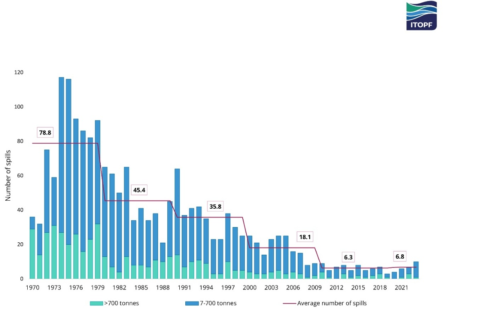
Fig. 82 איור 10.1: מספר אירועי דליפת נפט גולמי ממכליות לאוקיינוסים בכל שנה (עמודות) ובממוצע בכל עשור (קו אדום) בין 1970 ו-2023. מקור – https://www.itopf.org/knowledge-resources/data-statistics/statistics/; Copyright © ITOPF Limited, 2023. All rights reserved. Reprinted with permission. https://www.itopf.org/knowledge-resources/data-statistics/statistics/; Copyright © ITOPF Limited, 2023. All rights reserved. Reprinted with permission.#
זיהום פלסטיק באוקיינוסים#
פסולת פלסטיק מהווה כ-60% עד 80% מכלל הפסולת הנכנסת לאוקיינוסים. מחקר שנעשה ב-2010 העריך שכ-10 מיליון טון פלסטיק מגיעים לאוקיינוסים מידי שנה, ויש עלייה בכמויות מידי שנה (ראו פרק 4).[27] זהו נתון מטריד ביותר שמעורר מחקר רב ומאמצי תיקון רבים (איור 10.2).[28] יש גם תיעוד רחב של הנזקים האקולוגיים והאסתטיים של חתיכות פלסטיק גדולות המגיעות לאוקיינוסים.[29] במקביל ישנן עדויות להסעה של תוצרי פירוק חלקי של פלסטיק, חלקיקי מיקרו-פלסטיק וננו-פלסטיק.[30] ההובלה של סוגי פלסטיק שונים מאזור החוף לים הפתוח נעשית באמצעות זרמי שטח ורוחות,[31] בעיקר כחלקיקים מרחפים בגוף המים,[32] עד הגעתם לאתרים מרוחקים ביותר בלב האוקיינוס הפתוח, שם הם מצטברים (איור 10.3).[33] תהליך מתמשך זה גורם למצבורי הפלסטיק של לב הים להמשיך ולגדול.[34] כמו כן, ישנם גם מקרים של שחרור פלסטיק וחומרים רעילים מספינות שעברו תאונות או שטבעו.[35] שחרור פלסטיק וחומרים אחרים מספינות תורם פחות מבחינה כמותית לזיהום האוקיינוסים, אך הוא יכול לקרות באזורים רגישים במיוחד מבחינה אקולוגית, כפי שתיארנו לגבי זיהום הנפט באזור מאוריציוס. אחד הסיפורים של תנועת פלסטיק באוקיינוס שהגיע לכותרות העיתונים היה שחרור של 28,800 צעצועי פלסטיק (ברווזים, צפרדעים, בונים וצבים) מספינת מסע בשנת 1992 ואשר מסעם באוקיינוס נחקר ותועד ועזר להתחקות אחר זרמי השטח באוקיינוס.[36]
מאמצים רבים מושקעים בהתחקות אחר נדידתו של הפלסטיק ואחר תהליכי השחיקה שהוא עובר, למשל תהליכים הגורמים להגברת העיגוליות שלו במקביל לירידה בגודלו, תהליכים הקורים גם בזמן הובלה של סלעים ומינרלים טבעיים.[37] לאחרונה דווח שחלקיקים קטנים מ-5 מיקרומטר (מיקר-פלסטיק) הם חלקיקי הפלסטיק הנפוצים ביותר בשלושה אזורים סמוכים לחוף הן באוקיינוס השקט והן באטלנטי.[38] יש תיעוד נרחב של אזורי חוף הסמוכים למקורות השלכה של פלסטיק, ה“טובעים“ בכמות הפלסטיק המגיעה אליהם, כולל גם יערות מנגרובים שהן מערכות האקולוגיות חשובות במיוחד בסביבה החופית (ראו פרק 8).[39] במקביל, מתרבות העדויות שפלסטיק מגיע גם למעמקי הים ואף לקרקעית הים העמוק, כשהוא מובל לשם על ידי זרמי עומק.[40] בחלק מהמקרים, מנגנון ההסעה המוביל פלסטיק לסדימנט הימי מוביל לשם גם חמצן ונוטריינטים,[41] מה שגורם לכך שפלסטיק מצטבר באזורים עם פוריות גבוהה יחסית, וכתוצאה מכך סיכוייו לחדור למארג המזון עולים. במקביל, זרמי גִּלּוּחַ (upwelling)[42] מביאים לעיתים חלקיקי מיקרו-פלסטיק ממעמקי הים לאזורי חוף.[43]
באתרי אינטרנט רבים ניתן למצוא תיעוד נרחב של חנק בעלי חיים ימיים וציפורים על ידי יריעות ושברי פלסטיק.[44] לאחרונה אף דווח שציפורים ימיות נמשכות לחלקיקי פלסטיק בגלל שאצות הנצמדות לפלסטיק מפרישות די-מתיל סולפיד (DMS - dimethyl sulfide).[45] מיקרו וננו-חלקיקים של פלסטיק נכנסים למערכת העיכול של יצורים ימיים, נודדים במעלה מארג המזון, וגורמים נזק רב לביוטה הימית.[46] למשל דווח על נזק לצבים החיים באגן המזרחי של הים התיכון הן משרידים של רשתות דיג, והן מחלקיקים של מיקרו- וננו-פלסטיק שנכנסו למערכת העיכול של 100% מהצבים.[47] למרות שפלסטיק חודר כנראה למערכת העיכול של כל היצורים הימיים, אלה הניזונים בשיטת הסינון (filter-feeder organisms) חשופים במיוחד לזיהום פלסטיק. נאספו עדויות לכך שמערכת העיכול והרבייה של מינים שונים של צדפים (oysters) נפגעו מחשיפה לחלקיקי מיקרו-פלסטיק.[48] ריכוזים גבוהים ואף מדאיגים של תרכובות PFAS ופנול (phenol) מסוימות נמדדו במספר פרטים של לוויתן קטלן,[49] הנמצא בראש מארג המזון הימי, ולכן אוגר בגופו מזהמים המתרכזים ברקמות השומניות (bio-accumulation). תופעות דומות מוזכרות בפרקים קודמים לגבי סוגים רבים של חומרים פטרו-כימיים וכפי שנדון בהמשך הפרק לגבי כספית.
לאחרונה נעשו מספר ניסיונות לנקות את הים מפלסטיק,[50] בעיקר באזורים בהם הוא מצטבר בכמויות גדולות. ניסיונות אלה עוררו וויכוח בקהילה המדעית, מאחר ומאמצי הניקוי של שאריות פלסטיק במצבורים של לב הים עלולים לפגוע באוכלוסיות של פלנקטון (plankton)[51] המגיעות לאותם אזורים באמצעות זרמי הים שהובילו לשם פלסטיק.[52] מצד שני יש רבים הטוענים שיש להחיש את מאמצי הניקוי למרות העלות הגבוהה הכרוכה בכך בגלל הנזק שהפלסטיק גורם ליצורים ימיים.[53]
{kind=link}
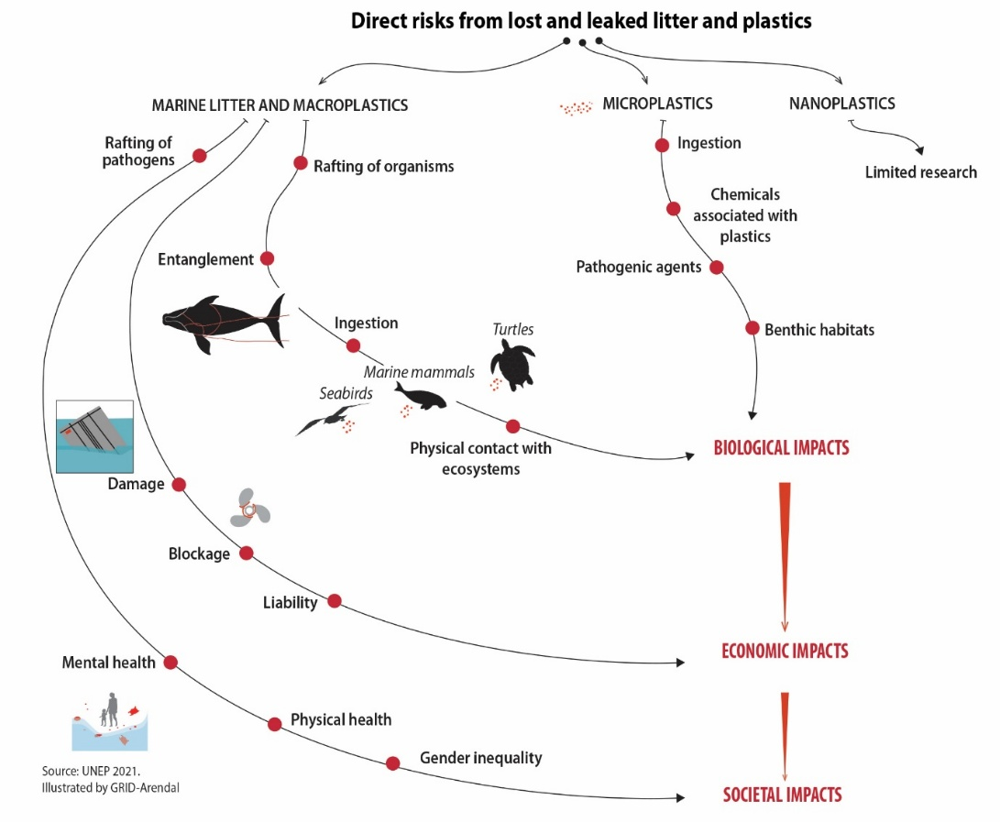
Fig. 83 איור 10.2: מהלך סוגי פלסטיק שונים (גדול, מיקרו- וננו-פלסטיק) והשפעתם על המערכת הימית. מקור – United Nations Environment Programme (2021) https://doi.org/10.1038/s41586-024-07758-6; © 2024 UNEP. Reprinted with permission.#
{kind=link}
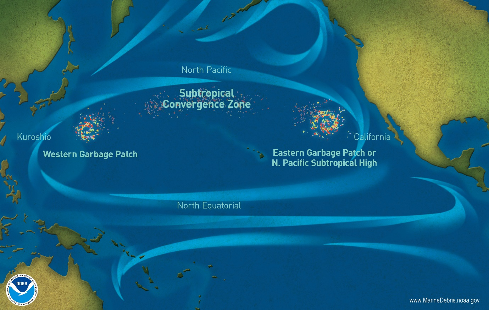
Fig. 84 איור 10.3: זרמי השטח ומצבורי הפלסטיק הגדולים באוקיינוס השקט. מקור – NOAA, https://marinedebris.noaa.gov/info/patch.html ; Reprinted with permission.#
חומרים אי-אורגניים ומתכות בסביבה הימית#
כבר עשרות שנים שמתבצע מעקב אחר המחזורים הביו-גאוכימיים של יסודות כימיים הנגזרים מסלעי היבשות ומובלים לאוקיינוסים על ידי נהרות, מי תהום ורוחות, או כאלו הנפלטים מפעילות וולקנית ברכסים מרכז-אוקיאניים.[54] בזכות מחקרים אלו ניתן לתעד את ההשפעה והשינויים שבני האדם גרמו להרכב האוקיינוסים בעשורים האחרונים ולהעריך את הסכנה הטמונה בהשפעות הללו. במשך זמן רב (מידי) שלטה בקהילה המדעית והציבורית התחושה שהאוקיינוסים כה גדולים ועצומים, עד שאין כל דרך להשפיע במעשינו על הרכבם ותכונותיהם. תפיסה זו הובילה להשלכת פסולת רעילה כגון חומרי נפץ וחומרי לוחמה כימית למעמקי הים.[55] דוגמא אחרת היא סילוק כמויות גדולות של DDT וחומרים רעילים אחרים לאגן סאן פדרו (San Pedro Basin) הנמצא מערבית ללוס אנג’לס באמצע המאה הקודמת.[56] רק בשנות השבעים של המאה שעברה, בעקבות מחקרים של פטרסון (Patterson) ושותפיו על ריכוזי עופרת במי האוקיינוס,[57] התחיל להתברר עד כמה גדולה ההשפעה השלילית של בני האדם על האוקיינוסים. בנוסף, מספר חוקרים השתמשו באלמוגים בני מאות שנים כדי לתעד את זיהום מי האוקיינוס במתכות הנלכדות על ידי השלד הקרבונטי בזמן השקעתו ממי הים. לדוגמא, נעשה שימוש בריכוזי עופרת וביחסיה האיזוטופים על מנת להעריך שטפים של זיהום תעשייתי ותחבורתי (אלקיל-עופרת – ראו פרק 5) המגיעים לאוקיינוס האטלנטי ולים התיכון במאות השנים האחרונות.[58] מחקרים רבים תעדו את השינויים בהרכב מי האוקיינוס, עליית החומציות שלהם ועליית הטמפרטורה של מי השטח (seawater surface temperature - SST).[59] לאחרונה החלו להבחין גם בעליית הטמפרטורה של מי העומק בחלק מהאוקיינוסים,[60] ואף בכמות רעש הרקע בעומק האוקיינוס.[61] כיום ברור לכל כי שינויים אלו הם ביטוי להשפעה רבת הממדים של האנושות על הסביבה הימית וכי יש לטפל בה.[62] לאור זאת מעודד לעיתים לראות שהפסקת זיהום מסוים מתבטאת בירידה בריכוז המזהם. לדוגמא, ריכוזי עופרת במי ים המדווחים במחקר שפורסם בשנת 2018,[63] לאחר הפסקת השימוש באלקיל-עופרת כתוסף לדלק ברוב מדינות העולם, נמוכים ב-45% מהריכוזים שדווחו בתקופת שיא השימוש באלקיל-עופרת במכוניות.[64]
על מנת להמשיך לעקוב אחר שינויים במחזורים ביו-גאוכימיים של מתכות ויסודות כימיים אחרים באוקיינוסים ולתעד מגמות מדאיגות, התארגנה לפני מספר שנים קבוצה גדולה של מדענים שהקימה את מרכז המחקר GEOTRACES.[65] תוצאות הסקרים שחברי המרכז ביצעו הראו כי, למזלנו, רמת הזיהום של מתכות רעילות כמו עופרת או כספית במי הים עדין איננה מסוכנת לביוטה ימית או לבני האדם, אם כי הריכוזים במי הים כיום גבוהים במידה ניכרת בהשוואה לריכוזי הרקע שלהן. הסיפור של העופרת והכספית בסביבה הימית חשוב גם מפני שהוא מדגים את השפעתם של תהליכים ביוכימיים על החומרים המגיעים לאוקיינוסים והנזקים שהם גורמים לביוטה הימית. ריכוזי כספית בביוטה הימית עולים ככל שמתקדמים במארג המזון (bio-accumulation), בגלל שהיא יוצרת קשרים אורגנו-מתכתיים ומתרכזת בשומנים.[66] לעומת זאת, עופרת נוטה פחות ליצור קשרים אורגנו-מתכתיים ובנוסף נוטה להחליף סידן בשלד. לכן ריכוזי עופרת בגוף החי יורדים עם ההתקדמות במארג המזון (bio-purification).[67] בשנים האחרונות היתה ירידה משמעותית בפליטות האנתרופוגניות של מתכות כגון עופרת וכספית, אולם יש מקרים בהם הירידה הזאת לא מצאה ביטויה בריכוזים של מתכות ביצורים ימיים למרות הירידה בריכוזם במי הים משום שבמקביל ישנו שחרור לגוף המים של מתכות הנמצאות בסדימנט שזוהם לפני עשרות שנים (legacy pollution).[68] תופעות דומות תועדו גם בסביבה היבשתית (ראו פרק 5). כיום, הנושא של מתכות בסביבה הימית עולה מזווית חדשה, הנראית מדאיגה ביותר – כריית מתכות מקרקעית הים העמוק (Deep-sea mining). מדובר במגמה שצברה תאוצה בשנים האחרונות, ובמהלכה נבדקו עתודות של מתכות רבות הנמצאות בביקוש גבוה לתעשיית האלקטרוניקה ולייצור מקורות אנרגיה חילופיים, כמו עפרות נדירות (REE), נחושת, ניקל, קובלט ועוד (ראו סקירה בפרק 4).[69] את המתכות הללו מחפשים בעיקר בשלוש סביבות גיאולוגיות: (1) תרכיזי ברזל-מנגן בקרקעית הים העמוק, (2) סלעי בזלת הנחשפים ברכסים מרכז אוקיאניים, (3) אתרי פעילות הידרו-תרמלית ברכסים מרכז אוקיאניים. אזור הנקרא Clarion-Clipperton Zone הנמצא בקרקעית האוקיינוס השקט המזרחי והמרכזי, הוא אחד האזורים שנמצאים במוקד העניין של חברות כריה. לאחרונה נעשו שם מספר ניסיונות הפקה שעוררו מחלוקת בגלל הנזק הצפוי לביוטה של הים העמוק והסכנה שזמן ההתאוששות יהיה ארוך.[70]
הסביבה החופית (אזור הים הרדוד במדף היבשת)#
הסביבה הימית החופית מועדת במיוחד לפגיעה עקב פעילות בני האדם, והדבר מתבטא בסוגים שונים של אזורי חוף, כמו שפכי נהרות, יערות מנגרובים (שהוזכרו קודם ושלהם חשיבות סביבתית רבה שפורטה בפרק 8),[71] שוניות אלמוגים שיידונו בהמשך, ועוד. הבעיות הנפוצות ביותר הן פגיעה בבעלי החיים עקב דייג יתר וחציבת חול לבניה ולתעשייה,[72] הזרמת ביוב עירוני וחקלאי לא מטופל, הזרמת תשטיפים תעשייתיים, תחבורתיים, עירוניים ומנמלים[73] וכן כניסה של נוטריינטים (ראו בהמשך) ומדבירים חקלאיים[74] שנשטפו מהשדות לנהרות שהובילו אותם אל הים. זרימות אלה מכניסות לסביבה הימית חומרים רעילים מסוגים שונים הפוגעים בביוטה החופית מצד אחד, ועודפי נוטריינטים הגורמים לאאוטרופיקציה מצד שני (נרחיב על נושא זה בהמשך). שפכי נהרות הם כנראה אזורי החוף המזוהמים ביותר כיוון שהם נפגעים מפעילות בני האדם הן במעלה הנהרות והן באזור החוף.
באזור שפכי נהרות (אסטוארים ודלתות –estuaries and deltas)[75] מי נהר עם מליחות נמוכה פוגשים את מי הים המלוחים, וכתוצאה מכך, קורים מספר תהליכים,[76] מתוכם יש לתת את הדעת לתהליך שבו חלקיקים המובלים עם מי הנהר ונמצאים בתרחיף, מתחילים לשקוע ולהצטבר על קרקעית הים. תהליך הנובע משילוב של (1) ירידה במהירות הזרימה ו-(2) הורדת כוחות הדחייה החשמליים בין החלקיקים בגלל היונים המומסים במי הים.[77] לכן, כאשר נהר מוביל חומרים מוצקים מזוהמים, הם שוקעים לקרקעית הים בקרבת החוף ואינם מגיעים לים הפתוח. בהמשך, החומר ששקע לקרקעית מהווה מקור המשחרר לאט אל מי הים את החומרים הספוחים (adsorbed)[78] אליו וכך מזהם בצורה הדרגתית את מי הים.[79] הסכנה היא שהתחממות גלובלית (בעיקר שילוב של עליית הטמפרטורה והחמצת האוקיינוסים – ראו בהמשך) תחריף את מידת הזיהום של הסביבה החופית.[80] ישנם גורמים נוספים לפגיעה בסביבה החופית, הנובעים בעיקר מפיתוח מואץ של ערי חוף ומתקנים חופיים. אולם, גם חופים לא מיושבים אינם חסינים מפגיעות. כך למשל, המסה והתנתקות של גושי קרח באנטארקטיקה גרמה לנזק לקרקעית הים באזורים רדודים שסביב היבשת ולפגיעה משמעותית בביוטה החיה בקרקעית ועקב כך במגוון המינים המצוי שם.[81] במסגרת המאמצים להגן על הסביבה החופית מפני מפגעי פיתוח מואץ, נערכים מחקרים הבוחנים היתכנות להגן על אזור החוף באמצעים טבעיים. לאחרונה התפרסמו מספר מאמרים שהדגישו את החשיבות של שימור וטיפוח עשב ימי (seagrasses), המהווה מרכיב חשוב בהגנת אזורי חוף מנזקי סופות וגלי ים ובקיבוע פד“ח אטמוספרי.[82]
הלבנת אלמוגים ונזקים נוספים בשוניות אלמוגים#
אלמוגים חיים כבודדים (solitary corals) ובמושבות (אלמוגים בוני שוניות - reefs) בסביבות ימיות שונות: מים קרים או חמים, עמוקים או רדודים. אנחנו נתמקד באלמוגים בוני שוניות של מים רדודים הנמצאים באזורים אוקיאניים טרופיים וסוב-טרופיים, בין קווי רוחב 30 צפון ודרום בעומקים של עד כמה עשרות מטר. זהו סוג האלמוגים הנפוץ ביותר. הסיבה למגבלת העומק היא שבשוניות אלמוגים מתקיימים יחסים סימביוטיים בין האלמוג בונה-השונית לבין אצות החיות בתוך הרקמות שלו (zooxanthellae) העושות פוטוסינתזה ולכן זקוקות לאור. שוניות אלמוגים הם מהאזורים הימיים הפוריים ביותר, ולמרות שהן משתרעות על כ-3% בלבד משטח האוקיינוסים, הן מארחות כרבע מהמינים הימיים.[83] במילים אחרות, שונית אלמוגים מהווה מערכת אקולוגית מורכבת עם מגוון מינים גבוה מאד (כולל מיקרואורגניזמים)[84] ולכן היא זוכה לכינוי ”יער הגשם של האוקיינוס“.[85] בעשרות השנים האחרונות ובמיוחד החל משנות השמונים של המאה העשרים, חלה הרעה משמעותית במצבן של שוניות האלמוגים.[86] ההרעה קרתה בעיקר עקב גלי חום בהם נדון בהמשך וגם עקב סיבות אחרות הן עברו ”הלבנה“ (coral bleaching), תהליך בו האלמוגים משירים מעליהם את האצות וחלקם מתים.[87] בנוסף, ישנה הרעה במצבם של חלק מהמינים השוכנים בהן,[88] כאשר מידת הפגיעה בהן וקצב היעלמותן גברו בעשורים האחרונים (איור 10.4).[89] מצד שני ראוי לתת את הדעת שרק לאחרונה התגלה שהשטח הכולל של שוניות אלמוגים (כ-348,000 קמ“ר)[90] גדול משמעותית מהגודל שהיה ידוע עד לאחרונה (כ-260,000 קמ“ר), כלומר יש עדיין פערים משמעותיים בידע שלנו על שוניות אלמוגים.[91]
המאמר הראשון שתיעד ארוע הלבנת אלמוגים, התפרסם ב-1982.[92] עם חלוף השנים, התפרסמו מאמרים נוספים שתעדו את התופעה. למשל, ב-1999 התפרסם מחקר נוסף שהראה שגלי חום גורמים להלבנת שוניות האלמוגים.[93] המאמר מ-1999 הראה שבמספר אתרים שונים אירועי ההלבנה התרחשו כאשר טמפרטורת המים עלתה מעל הטמפרטורה המרבית הרב שנתית במעלה או שתיים לפרק זמן של שבוע-שבועיים. מחקרים מאוחרים יותר הראו שתכיפותם של אירועי חום כאלה עולה עם הזמן ועל כן ההתחממות הגלובלית מגבירה את הסיכוי שאירועים נוספים כאלו יקרו בעתיד.[94] כיום, כמעט מידי שנה מתרחשת תמותה מסיבית של שוניות שלמות בשונית האוסטרלית הגדולה (Great Barrier Reef). ניתן גם לראות לאורך השנים את התקדמות ההלבנה מהשוניות הצפוניות יותר (הקרובות לקו המשווה) כלפי דרום.[95] התחזית היתה ששנת 2023-24 (שנת אל-ניניו) תהיה קיצונית במיוחד. אכן זה היה המצב הן בשונית המחסום הגדולה,[96] והן במקומות רבים אחרים, כאשר כ-77% משוניות האלמוגים ברחבי העולם עברו ארועי הלבנה.[97] בסוף 2025 התפרסם דוח של ארגון ”Global Tipping Points“ הטוען שמצב שוניות האלמוגים חמור ביותר ולמעשה הגיע לנקודת אל-חזור, כלומר שהקצב של הרס השוניות עולה על קצב ההשתקמות שלהן (tipping point – ראו פרק 6).[98]
למרות המחקר הרב שנעשה על אלמוגים בוני-שונית, יש להפתעתנו מספר נקודות בסיסיות ביותר שעדין אין לגביהן תמימות דעים ושלהבנתן יש השלכה ישירה על דרכי ההתמודדות עם ארועי הלבנה. כל החוקרים מסכימים שאירועי ההלבנה נובעים מכך שהאלמוגים משירים מעליהם את האצות. השאלה היא מדוע הם עושים זאת? יתכן שהתשובה לכך תלויה במקור הנוטריינטים/מזון של השונית, האם אלה האצות הסימביוטיות, או טריפה של פלנקטון על ידי האלמוגים? למרות שמרבית החוקרים סוברים שהאצות אחראיות לרוב קיבוע המזון בשונית (בתור יצרניות ראשוניות הבונות חומר אורגני באמצעות פוטוסינתזה), יש חוקרים המציגים עדויות משכנעות לגבי חשיבות הקיבוע באמצעות סינון של פלנקטון על ידי האלמוגים בשונית.[99] בכל מקרה, אם סינון של פלנקטון על ידי השונית הוא מקור מרבית המזון של השונית, אז יתכן שאירועי ההלבנה הם ביטוי לעקת מזון שבה נמצאים האלמוגים. העקה נגרמת מכך שאירועי חום גורמים לחימום מי השטח ויצירת שכבה עליונה של מים חמים וקלים הלוכדים את הפלנקטון וגורמים לכך שהוא אינו זמין לאלמוגים. אם אכן זה ההסבר, ערבוב מכאני של המים מעל השונית באמצעות צי של ספינות קטנות יכול להקל על העקה ולהפחית את חומרתם ותכיפותם של אירועי ההלבנה. לעומת זאת, אם האצות הן מקור המזון, אז לא ברור שאירועי הלבנה קשורים לעקת מזון. זאת דוגמא אחת מיני רבות כיצד הבנה של תהליכים בסיסיים במערכת אקולוגית יכולה להביא לפתרון של בעיה סביבתית. דרוש אם כן מחקר שיענה על השאלה שהעלינו ובעקבותיו יתכן ותהיה לנו דרך להתמודד, לפחות חלקית, עם הלבנת אלמוגים.
יש מחקרים (שגם לגביהם יש מחלוקת) הטוענים שאלמוגים ששרדו אירוע הלבנה הצליחו לעמוד בטמפרטורה גבוהה במעלה עד מעלה וחצי צלזיוס לאחר שהחליפו את מיני האצות הסימביוטיות למינים עמידים יותר לחום.[100] אכן, בניתוח של עמידות אלמוגים לאירועי חום נמצאה עמידות גבוהה לאירועי הלבנה בכמעט מעלת צלזיוס אחת בין השנים 2007-2017 לעומת עמידותם בין השנים 2006-1998.[101] כמו כן נמצא שמיני אלמוגים שהיו עמידים יותר לגלי חום ייצרו כמויות גדולות יותר של חלבון מסוים. כלומר, חשיפת האלמוגים לגלי חום הולכים וגוברים הגבירה תוך שנתיים את עמידות החום של אותם אלמוגים במידה ניכרת. מחקר נוסף טען שניתן לשפר את עמידות מיני אלמוגים מסוימים לעקת חום באמצעות חשיפה מבוקרת שלהם לטמפרטורה של 29 מעלות צלזיוס במשך יומיים.[102] תוצאה זו מעודדת מבחינת יכולת העמידות של אלמוגים בהשפעות התחממות גלובלית.[103] בנוסף, במחקר שנערך על שוניות מבודדות לאורך החוף הצפון-מערבי של אוסטרליה, נמצא שהן השתקמו במהירות גדולה יחסית (מ-9% ל-44% שיקום תוך 12 שנה) מסיבות שונות, בין היתר בזכות הפרעות מועטות של בני אדם. זאת למרות שאספקת תרביות (larval supply) ששרדו אירועי הלבנה בשוניות אחרות הייתה נמוכה במשך שש שנים בגלל המרחק הגדול שבין השוניות.[104] גם בהוואי דווח ששוניות שסבלו פחות מהפרעות אנתרופוגניות השתקמו במהירות גדולה יותר בעקבות אירועי חום ונזקים שנגרמו להם.[105] בשנים האחרונות מתרבים המאמצים לשקם (rehabilitate) שוניות אלמוגים, אם כי המאמץ עדיין נמצא בחיתוליו.[106] בשנת 2024 התפרסמו מאמרים שהראו שאלמוגים שעברו תהליך של עזרה בהפריה מחוץ לשונית או הפריה סלקטיבית (selective breeding) פיתחו עמידות גבוהה יותר לאירועי חום בהשוואה לאלמוגים רגילים מאותו סוג.[107] לטענת המחברים, שיטות הפריה כאלה יכולות לסייע בשיקום שוניות שנפגעו מאירועי הלבנה.
בנוסף לאירועי הלבנה, יש דיווחים בספרות על פגיעות נוספות באלמוגים, כמו למשל בעקבות אאוטרופיקציה של גוף המים בסמוך לשונית,[108] פגיעה בתהליכי רבייה עקב זיהום אור,[109] החמצת מי האוקיינוסים (עליה נרחיב בהמשך) או זיהום פלסטיק[110] ואירועי זיהום של נפט גולמי והתזקיקים שלו (ראו לעיל). בגלל העקות השונות בהן נמצאות שוניות אלמוגים נפגע קצב הצמיחה שלהן. לאחרונה התפרסם מחקר הטוען שקצב הצמיחה של שוניות אלמוגים במערב האוקיינוס האטלנטי אינו מצליח להדביק את קצב עליית מפלס הים (ראו בהמשך הפרק), ולכן תוך עשורים ספורים השוניות לא יוכלו לעצור את משברי הגלים ולהגן על החוף.[111] חשוב גם להדגיש כי יש משרעת גדולה מאד במידת הפגיעה בשוניות אלמוגים, ונמצא שלמידת המעורבות ולאכפתיות של קהילות האנשים המקומיים יש תפקיד חשוב בשמירה על מצב השונית.[112] דוגמא לניסיון התמודדות עם נזקים לשונית אלמוגים היא השונית של דרום-מזרח מקסיקו באזור קנקון (Cancun) אשר בוטחה בשנת 2020 על ידי חברת ביטוח נגד נזקי הוריקנים, שתכיפותם ועוצמתם גוברים בעקבות ההתחממות הגלובלית (ראו פרק 6).[113] ביטוח של משאב טבע כמו שונית אלמוגים (או יער מנגרובים) הוא בעייתי מבחינה עקרונית-ערכית (ראו הדיון בפרק 7 על אקולוגיה עמוקה לעומת אקולוגיה רדודה), אולם הוא מכניס למשחק של הגנת הסביבה את אחד השחקנים הראשיים בכלכלה העולמית, חברות הביטוח. כיוון נוסף המעורר מחלוקת חריפה הוא הנדסת-אקלים בקנה מידה קטן באזור השונית. מדובר בניסיון ליצור באופן מלאכותי ערפל ועננים ימיים מעל השונית שיצלו עליה וימתנו את התחממות המים באזור השונית.[114]
גם סביבות חופיות באזורים שמצפון ומדרום לרצועת שוניות האלמוגים יכולים להיות משופעים במינים רבים של יצורים ימיים. דוגמא לכך הן יערות של אצות חומות (kelp). יש כיום הכרה בחשיבותם הגדולה הן מבחינת הגנה על מגוון מינים ומיחזור נוטריינטים והן כתורמים לקיבוע פחמן וסילוקו מן האטמוספרה.[115] למרות זאת, יערות kelp סובלים מפגיעות מרובות הן בגלל פעילות פיתוח ובינוי באזורי חוף, והן בגלל התחממות גלובלית. לדוגמא, בעקבות עשורים של התחממות האוקיינוס וגלי חום ימיים, יערות kelp ומינים נלווים של מים ממוזגים הוחלפו ב-seaweed, בחסרי חוליות, ובאלמוגים המאפיינים מים חמים יותר במקטע שאורכו 100 ק“מ לאורך חופי אוסטרליה[116] או באצות אדומות (turf algae)[117] באזורי חוף רבים.[118] אצות אלה מפרישות חומרים לגוף המים הפוגעים ביכולתם של יערות ה-kelp להשתקם.
{kind=link}
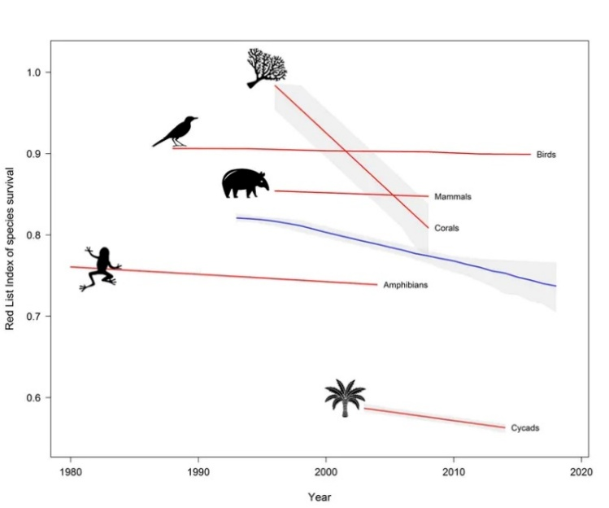
Fig. 85 איור 10.4: מידת הסכנה למספר קבוצות טקסונומיות, כולל אלמוגים. מקור – https://www.iucn.org/resources/conservation-tool/iucn-red-list-threatened-species ; ©IUCN. Reprinted with permission.#
תהליכי אאוטרופיקציה בסביבה החופית ואזורים עניים בחמצן בים העמוק#
החל משנות השישים של המאה שעברה יש בסביבה הימית החופית מגמה של גידול מעריכי (ראו הגדרה פרק המבוא) בכמות ובשטח של ”אזורים מתים“ (dead zones).[119] הסיבות לכך הן עליה בהזרמת נוטריינטים בנהרות המנקזים שדות חקלאים ובתשטיפים וביוב עירוני לא מטופל או מטופל חלקית.[120] כל אלה גורמים לתהליכי אאוטרופיקציה (שפורטו בפרק 9).[121] בשנת 2008 דווח על למעלה מ-400 אזורים המוגדרים כ-dead zones עם שטח כולל של כרבע מיליון קמ“ר, כאשר המחסור בחמצן שנוצר בשכבת המים התחתונה ובסדימנט של האזור החופי יוצר תנאי ”היפוקסיה/אנוקסיה“ (hypoxia/anoxia)[122] וגורם לעקה קשה של החברה האקולוגית החיה על קרקעית הים (הבנתונית - benthic).[123] בנוסף, חלק מהאצות הפורחות באזורים אלה מפרישות רעלנים לגוף המים שפוגעים ביצורים אחרים.[124] אירועי פריחה כאלה של אצות רעילות נקראים ”גאות אדומה“ (red tide),[125] ויש חוקרים הטוענים שתכיפותם עולה בשנים האחרונות.[126]
רבים מהאזורים החופיים המזוהמים נמצאים דווקא במדינות מפותחות בהן נעשה שימוש רחב יותר בדשנים חקלאיים. למשל, בבריטניה דווח שזרימות ביוב לא מטופל או מטופל חלקית, בנוסף לתשטיפי שדות עשירי נוטריינטים, יצרו בעיה חופית חמורה. לעומת זאת, ביוון המצב טוב הרבה יותר משום ששם נעשים מאמצים רבים לנטר חריגות באיכות מי הים (פתוגנים, נוטריינטים) כדי למנוע זיהום רחב שעלול לפגוע באטרקטיביות של חופי יוון לתיירים.[127] גם ימים סגורים כמו הים הבלטי, הים השחור, הים האדריאטי, המוקפים במדינות בהן יש פעילות חקלאית ענפה ושימוש נרחב בדשנים, סובלים מהיווצרות של dead zones. זהו המצב גם במפרץ מקסיקו, בו מתפתחים תנאים של dead zone כמעט מידי שנה. האירועים הללו מסתיימים כאשר לקראת החורף הסופות והרוחות מתחזקות, ונוצר ערבוב של גוף המים מה שמאפשר למים משכבת המים העליונה, העשירים בחמצן מומס לחדור לעומק.[128]
בדומה לעלייה בתכיפות של פריחות אצות באזורי החוף, ישנם גם דיווחים על התפשטות פלנקטון חופי ויצירת פריחות בעקבות עלייה בכמות חומרי דשן המגיעים מהיבשה וממרכזים של חקלאות ימית.[129] התופעות הללו תועדו בשטחים נרחבים של אזורי החוף (כ-35 מיליון קמ“ר – השווה ל-9% משטח האוקיינוסים). תופעת הפריחות חריפה במיוחד באזורים חופיים בהם יש בנוסף upwelling של מי עומק, בעיקר סביב אפריקה ודרום אמריקה. העלייה בטמפרטורה של מי השטח באוקיינוסים גרמה גם להתגברות התופעה ברחבים הגבוהים, הרחק מקוו המשווה. הצפי של חלק מהחוקרים הוא שהתופעה של פריחות אצות תגבר עם ההתחממות הגלובלית, בגלל ששינוי באופי המשקעים, כולל עלייה בתכיפות של סופות חזקות, יגרמו לשטיפה מוגברת של נוטריינטים על ידי נהרות אל הים, דבר שיוביל להחרפת תהליכי אאוטרופיקציה בשפכי נהרות (אסטוארים - estuaries) ובאזורי החוף שבקרבתם. המחקר התמקד בחנקן שהוא לטענתם המקור העיקרי לתהליכי אאוטרופיקציה באזורי חופים.[130] התכיפות הרבה של ארועי אנוקסיה הובילה למיזמי החדרה של חמצן/אוויר או מי שטח עשירי חמצן לשכבת המים העמוקה.[131] ניסיונות כאלה נעשו בעבר הן באזורי חוף ימיים והן באגמים. המסקנה העיקרית שעולה מניסיונות הללו הוא שרצוי להימנע מהם ככל שניתן בגלל שהם יוצרים סדרה של תופעות לוואי שליליות והשפעתם פוסקת מיד עם הפסקת ההחדרה.[132] במקום זאת יש לטפל בגורמים ליצירת אזורי אנוקסיה, בעיקר באספקה לא מבוקרת של נוטריינטים (בעיקר חנקן וזרחן).[133]
בעומק הים הפתוח ישנם אזורים שגם בהם נוצרו בעשורים האחרונים גופי מים עם ריכוזי חמצן מומס נמוכים (אזורים דלי חמצן בלב ים - hypoxia/anoxia).[134] תופעה זאת קורית בגלל שילוב של מספר תהליכים. החמצן נצרך בזמן פירוק של חומר אורגני ששוקע בגוף המים (תהליך טבעי שקורה תמיד) ואם אין הספקה מספקת של חמצן ממי השטח הממיסים חמצן אטמוספרי, נוצרים תנאי hypoxia/anoxia בעומק. שני תהליכים שקרו לאחרונה פגעו ביכולת ההספקה של חמצן מומס לעומק הים. תועדה ירידה של כ-2% בריכוזי חמצן מומס במי ים מאז 1960,[135] ככל הנראה עקב עליית הטמפרטורה שלהם.[136] בין שכבת המים העליונה שמתחממת וריכוז החמצן בה יורד (האזור הפוטי, אליו חודר אור השמש – photic zone)[137] לבין מי העומק ישנו אזור מעבר שבו קורית ירידה משמעותית בטמפרטורה עם העומק (תרמוקלינה - thermocline).[138] מתחת לתרמוקלינה המים צפופים יותר מהמים שמעליה. חמצן טרי מגיע לשכבת המים העמוקים כאשר מי העומק מתערבבים עם מי השטח שנמצאים במגע עם האטמוספרה. מסתבר שגודל גופי המים בהם מתפתחים תנאי אנוקסיה תלוי מאד בעומק התרמוקלינה, הגדל בעקבות ההתחממות הגלובלית.[139] כלומר, בעקבות ההתחממות הגלובלית יש פחות חמצן בשכבת המים העליונה והיא נעשית עמוקה יותר וקשה לה להתערבב עם המים הנמצאים מתחתיה ולספק להם חמצן.
תופעות של אנוקסיה באוקיינוסים בעבר הגיאולוגי נקשרו למגוון סיבות ותהליכים בנוסף לאלו שתוארו לעיל. למשל נמצא קשר הופכי בין ריכוזי חמצן מומס וזרחן (בתוך פוספט - PO~4~^3-^), משום שריכוזי פוספט גבוהים מובילים להגדלת היצרנות הראשונית המובילה לתהליכי אאוטרופיקציה וצריכת חמצן מומס במי האוקיינוסים.[140] מאמר נוסף שטיפל בשתי תקופות חמות ששררו בכדור הארץ במיליוני השנים האחרונות (1) תחילת האיאוקן - Early Eocene Climatic Optimum (EECO) לפני כ-55 מיליון שנה, ו-(2) אמצע המיוקן - Middle Miocene Climatic Optimum (MMCO) לפני כ-15 מיליון שנה, זיהה ירידה בתהליכי דניטריפיקציה (ראו פרק 5) באוקיינוסים, שאותם יחסו המחברים לעלייה בריכוז חמצן מומס דווקא בתקופות החמות הללו.[141] הסיבה לכך אינה ברורה, וגם לא ברור מה היה טיב היחסים הזמניים והסיבתיים בין ההתחממות הגלובלית לבין העלייה בריכוז חמצן מומס במי הים בתקופות אלה (כלומר, מה קדם למה). מצד שני, לאחרונה התפרסם מחקר שזיהה אירועי אנוקסיה מובהקים באוקיינוס האטלנטי דווקא בתקופת הקרח האחרונה,[142] כאשר הטמפרטורות על פני כדור הארץ היו נמוכות לעומת ההווה. כלומר, בזמן שבו טמפרטורות מי האוקיינוס היו נמוכות והם יכלו להמיס יותר חמצן. לדעת המחברים אירועי אנוקסיה הללו קרו בגלל ירידה משמעותית ביכולת של מי שטח עשירים בחמצן מומס להגיע לעומק. [143] לטענתם זה קרה בעקבות נסיגת שדה הקרח של צפון אמריקה. כאשר, לפחות באחת מנסיגות אלה, בסוף תקופת הקרח האחרונה, זוהתה תרומה משמעותית של חומר וולקני ששחרר נוטריינטים למים והגביר את היצרנות הראשונית במי השטח. היצרנות הראשונית גרמה לצריכת חמצן מוגברת בעומק, שיצרו אירוע אנוקסיה באוקיינוס הצפוני.
דיג יתר ופגיעה במגוון המינים#
כמעט חמישית מצריכת החלבון של האנושות מקורה בדגים וחיות ים אחרות ובחלק מארצות המזרח הרחוק היא מעל רבע מצריכת החלבון הכוללת. מדינות הדייג העיקריות ב-2018 היו יפן, סין, רוסיה, ארה“ב, פרו, אינדונזיה, ווייטנאם והודו.[144] לצד זאת, אחוז הולך וגדל מאספקת דגים וחיות ים אחרות מגיע מחקלאות ימית, שהיא כיום המקור העיקרי לגידול באספקת הדגה. בעוד שיבול הדייג העולמי נשאר די יציב בשנים האחרונות, ועלה ב-14% בלבד בין 1990 ל-2018, יבול החקלאות הימית עלה באותה תקופה ב-500%.[145] אולם, שילוב של מספר גורמים (דיג יתר, זיהום ממקורות יבשתיים מספינות ומחוות של חקלאות ימית, פגיעה באזורי מחייה, מינים פולשים והתחממות גלובלית) מסכנים את מגוון המינים הימי בצורה משמעותית וגורמים לירידה ניכרת במספר מיני הדגים שניתן לדוג באופן בר-קיימא מ-90% ב-1990, ל 65% ב-2017.[146] יתרה מזאת, נראה שסכנת הכחדה מאיימת יותר על דגים גדולים, למשל כרישים,[147] הנמצאים בראש מארג המזון הימי, ולכך עלולות להיות השלכות הרסניות על בריאות מארג המזון כולו.[148] כמו כן, יש גם פגיעה מתמשכת במיקרואורגניזמים כגון פיטו- וזואו-פלנקטון, בקטריות וארכיאות[149]המהווים את הבסיס למארג המזון הימי והיחסים בינם לבין עצמם, לסביבתם וליצורים שניזונים מהם, קובעת את העמידות של המערכת הימית כולה.[150] למשל, נמצא שמיקרואורגניזמים בים מגיבים לשינויים בעוצמתם ובכיוונם של זרמים ימיים המושפעים משינויי אקלים. כתוצאה מכך, משתנה אספקת נוטריינטים וקצב קיבוע הפחמן עלול להשתנות.[151] יש גם דיווחים על נדידת סוגים מסוימים של מיקרואורגניזמים לכיוון הקטבים, עקב ההתחממות הגלובלית.[152] בנוסף יש דיווחים על פגיעה ניכרת משולבת מהתחממות גלובלית ודיג יתר. למשל, הדגה במפרץ הפרסי נפגעה ביותר עקב שילוב של דיג יתר והתחממות גלובלית.[153]
לא רק דגים ואלמוגים נמצאים בסכנת הכחדה. למשל, דווח שקיפודי ים שחורים (נזרית ארוכת קוצים) שחיים בים הקריבי וכן במפרץ אילת, נעלמים בשנים האחרונות בקצב הולך וגובר.[154] גם באזורים ימיים אחרים תועד קצב העלמות מינים גבוה במיוחד. על מנת לקבל זווית נוספת על סכנת ההכחדה של ביוטה ימית, הוצע להיעזר ברקורד של הכחדות קודמות.[155] המחקר התמקד בשש קבוצות טקסונומיות שסבלו מפגיעה קשה לפני כ-23 מיליון שנה, בראשית תקופת המיוקן, והראה כיצד ניתן ללמוד מכך לגבי סכנת ההכחדה בהווה, ושהיא חמורה במיוחד למינים החיים באוקיינוס הטרופי.
דיג יתר הוא גורם מרכזי בפגיעה במערכת האקולוגית הימית. חלק משיטות הדייג הנהוגות כיום (dredging, trawling, blast fishing, longline fishing, gillnets, ”ghost fishing“ )[156] הן בעייתיות במיוחד ופוגעות בביוטה הימית כולל במינים שאינם מהווים יעד לדייג (bycatch).[157] נזקים נוספים של שיטות הדייג המקובלות כוללים הרחפת סדימנט ופגיעה ביצורים שוכני קרקעית, הגברת תהליכי אאוטרופיקציה ויצירת תנאי אנוקסיה בקרבת הסדימנט המורחף, ועוד.[158] נושא אכיפת מגבלות דייג ושימוש בשיטות מותרות הוא נושא סבוך ביותר, אולם לאחרונה הסתבר שכמאה חברות גדולות מפעילות שליש מצי ספינות הדייג העולמי, מה שמקל על המעקב אחריהן ואיתור האחראיים לחריגות.[159] מצד שני, השתלטות גורמים עברייניים על ענף הדייג באזורים מסוימים מקשה ואף מונעת את היכולת להנהיג באזורים הללו דייג בר-קיימא.[160] למרות כל הקשיים, ישנם גם סיפורי הצלחה. מאמצים שנמשכו ארבעה עשורים לאסוף ציוד דיג שהושאר באוקיינוס השקט מסביב להוואי הניבו תוצאות. לדוגמא, נרשמה ירידה במספר המקרים בהם מין של כלב ים הנמצא בסכנת הכחדה (monk seal) נלכד על ידי ציוד דיג נטוש.[161]
על מנת לבער את התופעה נדרש מאמץ בינלאומי והגעה להסכמים בינלאומיים, הגברת השקיפות והתגייסות של גורמי אכיפה למאמץ. בשנת 1995, נחתמה אמנה כזאת (The Code of Conduct for Responsible Fisheries) ומידי שנתיים נבדקת העמידה ביעדים שהוצבו בה.[162] לעמידה ביעדי דיג בר-קיימא יהיו גם השלכות חיוביות על כ-50% ממיני הציפורים, היונקים והצבים הימיים.[163] במשך השנים הסתבר כי הדרך היעילה ביותר להבטיח את מגוון המינים האוקיאני ולהגיע ליבול דיג בר-קיימא היא באמצעות הגדרת חלקים מהאוקיינוס כאזורים אסורים לדיג.[164] ואכן, בשנת 2020 הוגדרו כ-8% משטח האוקיינוסים כאזורים מוגנים (marine protected areas - MPAs).[165] חלקם אזורים אסורים בדייג (no-take) וחלקם אזורים בהם דיג חלקי ומפוקח מותר (multiple-use). בשניהם כבר נמצא שיש שיפור בכמות הדגה,[166] אם כי במידה שונה. ישנם גם דיווחים סותרים לגבי חדירה של ספינות דייג לאזורים אלה למרות האיסור.[167]
בשנת 2023 נחתמה אמנה בהובלת האומות המאוחדות שהציבה יעד של 30% כאזורים מוגנים (בעקבות אמנת מונטריאול 2022).[168] מעבר להגדרת אחוז השטח, הכוונה הייתה לשים דגש על הים הפתוח (high seas), הנמצא מעבר לאזור הימי הכלכלי הבלעדי של כל המדינות (EEZ).[169] הסכם זה כולל גם התייחסות לנושא של שיתוף מדינות מתפתחות בניצול משאבי הים לצרכי מחקר ופיתוח מוצרים שונים. נותר לראות כיצד תיושם אמנה זו בשנים הקרובות והאם אכן בשנת 2030 נגיע לכיסוי של 30% משטחי האוקיינוסים כשטחים מוגנים.[170] יש חוקרים הטוענים שעבור יצורי הים הגדולים, היעד של 30% אינו מספיק בגלל מרחקי הנדידה הגדולים שלהם,[171] ושיש להגדיר מסדרונות מעבר שבהם יהיו מגבלות על פעילות בני האדם, כמו למשל דייג. בעקבות הניסיונות הללו מתברר שחשוב לנסות להגדיר היטב מה הם יעדי השיקום של המערכת הימית בסביבות שונות, תוך התחשבות בעמדות של כל הגורמים המעורבים במאמצי השיקום. יש למצוא דרכים להגביר את העמידות של המערכות האקולוגיות בעקבות השיקום, ולאמץ מדיניות שתהיה מספיק גמישה כדי שתוכל להתאים את עצמה לשינויים המתרחשים במהלך תהליך השיקום.[172] מאמצי שיקום נעשים גם באופן מקומי או אזורי, לדוגמא, באוקיינוס הדרומי שמסביב לאנטארקטיקה או בים התיכון (אמנת ברצלונה שתחילתה בשנת 1976).[173]
מרבית החוקרים את ענף הדיג גורסים שכדי למנוע הכחדת מיני דגים רבים יש לפעול להגדלת החלק של חקלאות ימית בהספקת החלבון הימי. אכן, ב-2018 סיפקה החקלאות הימית כ-52% מתצרוכת הדגים בעולם, והצפי הוא שחלקה יעלה בעתיד.[174] מצד שני, ברור שיש להגדיל את החקלאות הימית בצורה נכונה ובת קיימא, כולל מתן דגש על גידול אצות ורכיכות ועל ידי כך גם לסלק פד“ח (CDR – ראו פרק 3),[175] וכן על מנת למזער את ההשפעות השליליות של החקלאות הימית כגורם לאאוטרופיקציה של הים, לשחרור פתוגנים, שאריות אנטיביוטיקה ועוד.[176] חלק ניכר מהגידול בחקלאות ימית אמור באמצעות בריכות גידול הנמצאות על היבשה ומוזנות במי ים, וסוג זה של חקלאות ימית צפוי לגדול בקצב מהיר בשנים הקרובות ועל כן מחייב תשומת לב מיוחדת. כיום מושקעים מאמצים ליישם את עקרונות הכלכלה המעגלית בחקלאות ימית וכן לגייס אותה על מנת ללכוד פד“ח (איור 10.5). למרות המגמות החיוביות בחקלאות ימית, עדין מרחפים מעליה סימני שאלה רבים הנובעים מהצורך לגדל דגים בצפיפות גדולה, וכתוצאה מכך להשתמש בכמויות גדולות של אנטיביוטיקה ובחומרי הדברה כדי להתגבר על מחלות וטפילים,[177] מה שעלול ליצור תופעות של עמידות בפני אנטיביוטיקה בתרביות חיידקים ביצורים ימיים.[178] לאחרונה התפרסמה עבודה המאתגרת את הקונצנזוס הקיים לגבי יתרונותיה של חקלאות ימית.[179] מחברי המחקר טוענים שתהליך ההזנה של סוגים רבים של חוות דגים מתבסס על דיג ופגיעה בדגים המהווים את המזון של דגי החווה, ולעיתים נוצר מצב שכמות הדגה הנפגעת בתהליך עולה על כמות הדגה שהחוות מייצרות.
{kind=link}
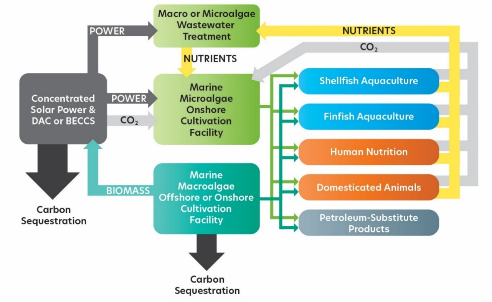
Fig. 86 איור 10.5: עקרונות הכלכלה המעגלית בחקלאות ימית. מקור – Greene et al. (2022) https://doi.org/10.5670/oceanog.2022.213 ; Creative Commons Attribution 4.0 International License. Reprinted with permission.#
מינים פולשים#
מינים פולשים בים מהווים בעיה חמורה כמו ביבשה, עם קווי דמיון רבים אבל גם עם מספר הבדלים חשובים. רוב המינים הפולשים מגיעים ליעדם כנוסעים סמויים בספינות, על פי רוב במי הנטל, כאלה ששוחררו מאקווריומים, אלה המגיעים בבוץ שעל רגלי עופות נודדים או כאלה שחצו נתיבי תנועה כמו תעלת סואץ. כ-150 מינים עברו דרך התעלה מהים האדום לים התיכון, וכ-10 בכיוון ההפוך (Lessepsian migration).[180] דוגמא למין פולש שהגיע מהאוקיינוס השקט לאוקיינוס האטלנטי הוא הזהרון (lionfish). זהו דג טורף המהווה איום משמעותי על מינים רבים של דגי שונית.[181] במשך מספר עשורים התפשט הזהרון לאורך חופי פלורידה ובים הקריבי, ועד לאחרונה זרמי החוף שנעים מדרום לצפון בים הקריבי הקשו עליו להגיע לחופי דרום אמריקה. בשנת 2024 הוא נצפה לראשונה במספר חופים של ברזיל.[182] בשנים האחרונות דג הזהרון נצפה גם בים התיכון אליו הוא הגיע מהים האדום דרך תעלת סואץ.[183] המדוזה (jellyfish) היא המין הפולש הימי המטריד ביותר, הן את החוקרים והן את הציבור. התחושה בקרב דייגים וחוקרים היא שכמות המדוזות וגודל הנחילים שלהן נמצאים במגמת עלייה, והן נתפשות כמסמלות את הידרדרות הסביבה הימית. נעשתה השוואה של תצפיות של מדוזות החל מ-1790 ועד 2011 על מנת לבחון האם אכן מדובר בעלייה משמעותית.[184] אולם המחקר לא העלה תשובה חד משמעית, בעיקר משום שהנתונים המוקדמים היו חלקיים ופחות אמינים. בנוסף, יש כיום עירוב של אוכלוסיות של מדוזות מקומיות ופולשות המופיעות בעונות שונות ובתנאים שונים, כפי שתועדו בים השחור ובחלקו המזרחי של הים התיכון (ראו בפרק 14 התייחסות למדוזה החוטית הנודדת).
החמצת האוקיינוסים#
כ-30% מכמויות הפד“ח שנפלטות מידי שנה עקב פעילות בני האדם (כ-40 גיגה-טון[185] פד“ח – ראו פרק 5) נקלטות על ידי האוקיינוסים.[186] העלייה בריכוז פד“ח מומס במי האוקיינוס מגבירה את החומציות של מי הים ומורידה את ערכי ה-pH.[187] זאת כיוון שחלק מהפד“ח המומס מגיב עם מולקולות מים ויוצר חומצה קרבונית (H~2~CO~3~), העוברת פרוק (דיסוציאציה) ומשחררת פרוטון (H^+^ - הגורם לחומציות). בעקבות זאת, בעשורים האחרונים ה-pH של מי ים ירד מערך של כ-8.2 לערך של כ-8.1, כלומר ריכוז הפרוטון המשתחרר מפרוק החומצה הקרבונית עלה בערך ב-25%.[188] לשינוי זה, ובעיקר להמשך המגמה של עליית החומציות, יש השלכות מרחיקות לכת אותן נפרט בהמשך. מצד אחד, חשוב לזכור שבעבר הגיאולוגי היו תקופות ארוכות בהן ערכי פד“ח באטמוספרה היו גבוהים בהרבה לעומת ההווה, אבל מצד שני קצבי השינוי בריכוזי פד“ח היו בדרך כלל איטיים הרבה יותר, מה שאפשר למערכת הביולוגית באוקיינוס להסתגל ולהתאים את עצמה לשינויים. בשנת 2009 פורסם בעיתון Oceanography גיליון מיוחד שהוקדש להחמצת מי האוקיינוסים והשלכותיה.[189]
אחת ההשלכות המיידיות של הגדלת החומציות של מי ים היא הפיכתם לפחות על-רווים (supersaturated)[190] להשקעת מינרלים קרבונטיים:[191] קלציט וארגוניט – calcite & aragonite: CaCO~3~. אלו שני המינרלים העיקריים שרוב חסרי החוליות (למשל רוב האלמוגים) וחלק ניכר מהמיקרו-אורגניזמים הימיים (בעיקר פלנקטון) משקיעים כדי לבנות את השלד שלהם. מידת העל רוויה חשובה בעיקר במי השטח האוקיאניים, הן בגלל שהם על-רווים להשקעת מינרלים קרבונטיים, והן מכיוון שבהם חיים רוב היצורים משקיעי שלד קרבונטי. באזורי החוף (מדף היבשת) היכן שעומק המים הוא עד כמה מאות מטר, נמצא הריכוז הגדול ביותר של יצורים משקיעי שלד קרבונטי. מי העומק של האוקיינוס (מעל עומק של כ-3,000 מטר), לעומת זאת, קרים ונמצאים תחת לחץ גדול, ובעקבות זאת הם תת-רווים עבור קלציט וארגוניט גם כאשר ריכוזי פד“ח המומסים במים נמוכים יחסית. כלומר, שלדי פלנקטון מת ששוקע לעומק האוקיינוס מתמוססים, והם מצטברים בכמויות גדולות בסדימנט רק כשעומק המים קטן מ-3,000 מטר. לאחרונה נטען שאזורי חוף ברחבים הגבוהים רגישים במיוחד לתהליכי החמצה משום שהם מקבלים כמויות הולכות וגדלות של מי הפשרת שלגים והמסת קרחונים המוהלים את מי הים ופוגעים ביכולת של מי הים להתמודד עם תהליכי ההחמצה.[192]
מחקרים שונים טוענים שמידת ההשפעה של החמצת מי הים על יכולת השקעת שלד של יצורים רבים באוקיינוס עדין אינה ברורה ויש סוגי פלנקטון מסוימים (למשל coccolithophores)[193] שאצלם אף נמדדה עלייה בקצב השקעת השלד בעשורים האחרונים.[194] אלמוגים בוני שונית שבהם עסקנו בחלק קודם של הפרק, משקיעים ארגוניט, ורבים תוהים האם השילוב של עלייה ברמת החומציות ובטמפרטורות של המים בעקבות התחממות גלובלית יאיצו את היעלמותם. כבר דווח על האטה של 27-49% בקצב השקעת השלד הקרבונטי בשוניות אלמוגים (Lizard Island, Great Barrier Reef) ב-2008-09, בהשוואה לקצב שנמדד בשנת 1975, עקב החמצת האוקיינוסים.[195] יתרה מזאת, יש מחקרים הטוענים כי שוניות אלמוגים נמצאות בסכנה אמיתית מהסיבה הזאת, ושעד סוף המאה הנוכחית הן לא יוכלו להשקיע שלד.[196] עם זאת, הפגיעה העיקרית בשונית עקב החמצה היא בתהליך יצירת השונית והשקעת השלד הקרבונטי, ואילו האלמוגים עצמם יכולים להמשיך להתקיים כבודדים. בניסויים שונים נצפה כי ברגע שה-pH של מי הים עלה, האלמוגים חזרו לבנות שונית.[197] להחמצת מי הים יש גם השפעה שונה על מיני אלמוגים כאשר סוגי אלמוגים מסוימים (בעיקר מעונפים - branching) רגישים יותר להחמצת המים בהשוואה לאלמוגים מאסיביים (hard boulder corals).[198]
שאלה נוספת שנחקרת כיום היא האם עליית החומציות של מי הים גורמת לפירוק מואץ של חומר אורגני מומס (DOM).[199] השאלה הזו קריטית שכן המסת החומר האורגני עלולה לשחרר כמויות גדולות מאד של פד“ח למי הים, להגביר את חומציותו ואף לשחרר פד“ח לאטמוספרה. תוצאות המחקר מצביעות על כך שגם כאשר רמת החומציות מגיעה לערכים גבוהים, קצב ההמסה של חומר אורגני אינו עולה בצורה משמעותית, כלומר אין פירוק מואץ של חומר אורגני מומס. בשנים האחרונות התפרסמו מחקרים שתעדו את קצב ההעברה של מי ים עם חומציות גבוהה מפני השטח של הים לעומק האוקיינוס האטלנטי הצפוני (מדוע דווקא שם – על כך בהמשך הפרק). כתוצאה מכך עומק הרוויה של ארגוניט נעשה רדוד יותר. כלומר, נמצא שארגוניט נעשה תת-רווי כבר בעומקים רדודים יותר, בקצב ”הרדדה“ של כ-15-10 מטר בשנה.[200] עוד עולה מהמחקר שעם הזמן, מי עומק עם חומציות גבוהה ינדדו גם לאזורים אחרים באוקיינוס האטלנטי ובהמשך אף יגיעו לאוקיינוסים אחרים, שבקרקעיתם יש מאגר ענק של CaCO~3\ ~הנמצא בסדימנט והיכול לסתור את חומציות המים. אולם לרוע המזל, הסתירה צפויה להיות איטית ביותר. מי השטח של האוקיינוסים הקרים (הארקטי והדרומי) מועדים במיוחד להגיע למצב של תת-רוויה עבור קלציט וארגוניט, שכן ערכי הרוויה יורדים במים קרים. מנגד, באוקיינוס הארקטי צפוי שינוי מתון יותר שכן מימיו מתחממים יחסית מהר, מה שמפצה במידה מסוימת על העלייה ברמת החומציות.[201] ניסוי בקנה מידה קטן של המסת תחמוצת סידן (lime - CaO) על מנת לסתור את חומציות מי הים, נעשה בקרבת החוף בפלורידה כחלק מההתמודדות עם בעיית החמצת האוקיינוסים. הניסוי הניב תוצאות חיוביות וכעת האתגר הגדול הוא לבצע מהלך דומה בקנה מידה גדול יותר.[202] אם יתבצע, זאת תהיה דוגמא לפרויקט גאו-הנדסי (geo-engineering) כדוגמת אלה שיוזכרו בהמשך הפרק ובפרקים 3, 6, ו-11.
זרמי האוקיינוס#
זרמי האוקיינוס והשפעתם על הסעת חום, מזהמים ונוטריינטים#
בהעבירם עודפי חום מאזור קוו המשווה לכיוון הקטבים זרמי האוקיינוס הם שחקנים מרכזיים בקביעת האקלים של כדור הארץ. אלפי מאמרים נכתבו על זרמי האוקיינוס בהווה ובעבר ותקצר היריעה מלהיכנס בעובי הקורה של נושא מורכב זה במסגרת הפרק.[203] בקצרה ניתן לומר שהזרמים בים מונעים על ידי פער בצפיפות המים (משקלם הסגולי). צפיפות המים מושפעת משילוב של מליחות וטמפרטורת המים. מים מלוחים הם בעלי צפיפות גבוהה יותר ממים פחות מלוחים ומים קרים הם בעלי צפיפות גבוהה יותר ממים חמים. עלייה במליחות נובעת מאידוי מוגבר באזורים מסוימים ואילו טמפרטורת המים מושפעת מהעומק, ועבור מי שטח היא תלויה ברוחב הגאוגרפי בו הם נמצאים.
בנוסף, זרמי שטח של האוקיינוס מושפעים ממערכת הרוחות העולמיות, כאשר גם הרוחות וגם הזרמים מושפעים מסיבוב כדור הארץ סביב צירו. תנועת הזרמים מושפעת גם ממיקום היבשות, המשתנה בפרקי זמן של מיליוני שנה, וממבנה קרקעית הים, כולל מהימצאותם של רכסים תת-ימיים (בעיקר הרכסים המרכז-אוקיאניים – mid-ocean ridges). [204]בקירוב ראשון, ניתן לדבר על זרמי שטח ועל זרמים הנעים בעומק האוקיינוסים. זרמים אלו יוצרים מערכת של סירקולציה (circulation) גלובלית (איור 10.6).[205] בסירקולציה זו ישנם שני אזורים בהם מי השטח נוחתים אל מעמקי האוקיינוס ונושאים איתם את כל המאפיינים הכימיים שלהם אל עומק האוקיינוס. מהצד השני, מי עומק עולים אל פני השטח (upwelling), חלקם באופן מרוכז בשוליים המזרחיים של כל האוקיינוסים, וכן באופן דיפוזי מפוזר בשטחי אוקיינוס נרחבים. העלייה בשולי האוקיינוסים מביאה אל מי האוקיינוס העליונים חומרים מומסים מהעומק, ובהם נוטריינטים שהצטברו בזמן שהמים שהו במעמקים. ככל שהשהות בעומק נמשכת זמן רב יותר, ריכוז החמצן קטן וריכוז הנוטריינטים, למשל זרחן (פוספט), גדל (איור 10.7).
אזור הנחיתה החשוב ביותר הוא האוקיינוס שסובב את יבשת אנטארקטיקה, שם מים קרים ומלוחים (מועשרים במלח שלא נכנס לשריג של הקרח הימי שנוצר) שוקעים אל עומק האוקיינוס כיוון שהם צפופים יחסית ויוצרים את ה-Antarctic Bottom Water - AABW. מרבית ה-AABW שוקעים בים ודל (Weddell Sea) ובים רוס (Ross Sea). אזור נחיתה נוסף נמצא בצפון האוקיינוס האטלנטי, AMOC - Atlantic Meridional Overturning Circulation.[206] בניגוד בולט, בצפון האוקיינוס השקט מים אינם נוחתים למעמקים (איור 10.6). הסיבה להבדל בין שני אזורי אוקיינוס קרים נעוצה במליחות הגבוהה בצפון האטלנטי המגיעה עם זרם הגולף,[207] לעומת מליחות נמוכה בצפון האוקיינוס השקט. זרם הגולף נע צפונה מאזור מפרץ מקסיקו, שם הוא נעשה יותר מלוח בגלל אידוי מוגבר. במהלך התנועה צפונה המים מתקררים, נעשים צפופים יותר ושוקעים לעומק האוקיינוס. מי העומק של האוקיינוס האטלנטי מכילים כמות גדולה של מי שטח שירדו למצולות והביאו איתם חמצן מומס, בעוד שמי העומק של האוקיינוס השקט עניים יותר בחמצן מאחר שלא מתרחשת בהם נחיתת מים לעומק (איור 10.7). מי העומק של האטלנטי מגיעים לאוקיינוס ההודי, משם לדרום האוקיינוס השקט, ובסוף המסלול לצפונו. תוך כדי זה, הם הולכים ומידלדלים בחמצן ומתעשרים בפד“ח ובנוטריינטים, זאת מכיוון שחמצן נצרך (אך לא מתחדש) תוך כדי חמצון ופירוק פלנקטון מת ששקע מפני השטח אל העומק. מצד שני, פירוק הפלנקטון בעומק מעביר אל מי העומק פחמן ונוטריינטים שהיו חלק מהגוף החי (ראו הרחבה על נושא בהמשך הפרק), ולכן מי העומק של האוקיינוס השקט ששהו יותר זמן בעומק, עשירים יותר בנוטריינטים כמו חנקן וזרחן ועניים בחמצן מומס בהשוואה למי העומק באוקיינוס האטלנטי (איור 10.7). במחקר שפורסם ב-2015 נכתב שבנוסף לשקיעת פלנקטון מת, קיימים זרמי ערבול (sub-mesoscale dynamic eddying flow) המעבירים פלנקטון מת וחומר אורגני חלקיקי ומומס ממי השטח אל העומק.[208] זרמים אלה פועלים בכל האוקיינוסים, ומסוגלים להעביר כמחצית מכמות החומר האורגני למי העומק בתקופת האביב, בזמן שהם פעילים.
{kind=link}
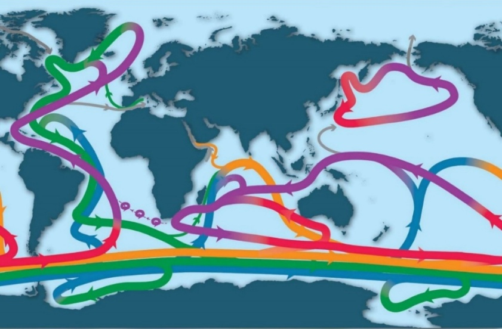
Fig. 87 איור 10.6: תיאור סכמתי של הסירקולציה הגלובלית באוקיינוס – המסוע האוקיאני. במהלך השנים התקיימו ויכוחים רבים לגבי עצם קיומו של המסוע, אולם כיום, המסוע המוצג כאן מקובל על מרבית החוקרים של זרמי האוקיינוסים. שימו לב למפתח הצבעים בתחתית האיור. מקור – Talley, L.D. (2013) http://dx.doi.org/10.5670/oceanog.2013.07. Creative Commons Attribution 4.0 International License. Reprinted with permission.#
Talley, L.D. (2013) http://dx.doi.org/10.5670/oceanog.2013.07. Creative Commons Attribution 4.0 International License. Reprinted with permission.

Purple = upper ocean and thermocline. Red = denser thermocline and intermediate water. Orange = Indian deep Water and Pacific deep Water. Green = North Atlantic deep Water. Blue = Antarctic bottom Water. Gray = Bering Strait components and Mediterranean and Red Sea inflows.
{kind=link}
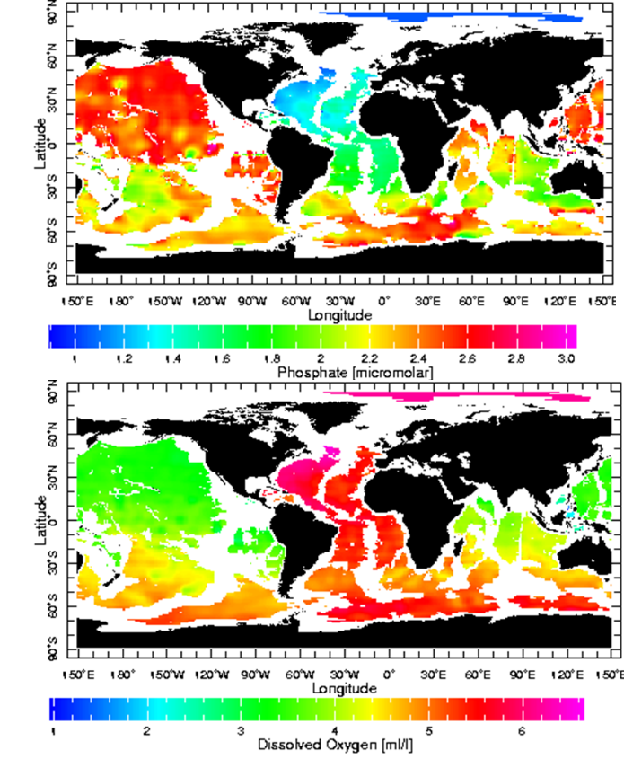
Fig. 88 איור 10.7: מפת האוקיינוסים עם ריכוזי זרחן, כפוספט (עליון) וחמצן (תחתון) בעומק של 4,000 מטר (שימו לב ליחידות). נתונים – https://www.ncei.noaa.gov/products/world-ocean-atlas#
יחסי הגומלין בין זרמי הים ושינויי אקלים#
לאוקיינוסים יש השפעה גדולה על אקלים כדור הארץ בגלל קיבול החום הגדול שלהם (ocean heat content) ויכולתם להעביר עודפי חום באמצעות זרמים. בשנים האחרונות מתרבים הדיווחים על כך שהאוקיינוסים בכלל ומערכת הזרמים האוקיאנית בפרט מגיבים ומשתנים בעקבות ההתחממות הגלובלית (איור 10.8), ותוך כדי כך משפיעים בתורם על שינויי האקלים באזורים שונים.[209] למשל, עקב הגברת קצב המסת הקרח בגרינלנד, יותר מים מתוקים מגיעים לצפון האטלנטי שם הם משפיעים על הזרמים ויצירת מי עומק.[210] הטיעונים הללו נסמכים בין היתר על מחקרים ששחזרו את התנאים באטלנטי הצפוני בתקופה הבין-קרחונית הקודמת, לפני כ-125 אלף שנה.[211] על פי השחזור, ההיחלשות בכניסת מים לעומק האטלנטי הצפוני (AMOC) קרתה במהירות בעקבות אספקת מים מתוקים כתוצאה מהפשרת קרח מוגברת בגרינלנד – אירועי Heinrich,[212] ונמשכה כמה מאות שנים. בדומה, ב-2018 התפרסם מאמר שטען שמאז אמצע המאה העשרים יש היחלשות משמעותית (כ-15%) ב-AMOC כנראה גם עקב החלשות זרם הגולף.[213] מחקרים מהשנים האחרונות טענו שבעקבות החלשות AMOC, צפון אירופה וסקנדינביה אמורות להתקרר, שכן יגיע אליהן פחות חום עם זרם הגולף ואף נטען שנקודת האל-חזור תקרה באמצע המאה העשרים ואחת, בעיקר על סמך עלייה בשונות של הזרימה.[214] לעומת זאת, מחקר שהתפרסם לאחרונה הראה שדווקא בתקופה בה ה-AMOC היה חלש במיוחד (1998-1975) חלה התחממות באזורים הללו.[215] בעקבות תצפית זאת מחברי המאמר הציעו מנגנון חדש המחבר בין העלייה בגזי החממה, התחממות כדור הארץ והסעת עודפי החום מפני השטח של האוקיינוס אל עומקו, תהליך הממתן את ההתחממות הגלובלית, אולם עלול למצות את עצמו בעשורים הקרובים. מחקר נוסף משנת 2025 טוען שגם אם AMOC ייחלש בעקבות ההתחממות הגלובלית, אין כמעט סיכוי שהוא ייפסק כליל בגלל שעליית מי-עומק (upwelling) בשולי האוקיינוסים תמשיך להוות כוח מניע.[216] מחקר אחר, גם הוא משנת 2025, טוען שהצפי להיחלשות משמעותית של AMOC במהלך המאה ה-21 נובע מהערכת חסר של היציבות התרמית של מי השטח בצפון האטלנטי.[217] בשנת 2026 התפרסם מאמר שהראה כי בשיא תקופת הקרח האחרונה, לפני כ-23 אלף שנה, פעילות ה-AMOC לא פסקה,[218] מה שאולי מרמז על רגישות נמוכה של פעילות ה-AMOC לשינויי אקלים.
כאמור, אזור הנחיתה החשוב ביותר נמצא באוקיינוס שסובב את יבשת אנטארקטיקה. כפי שהזכרנו בפרק 6, אזור זה היה שחקן מרכזי בהתקררות של ה-MPT (MPT – Middle Pleistocene Transition).[219] יצירת AABW מלווה בסילוק פד“ח המומס במי השטח אל עומק הים, וגורמת גם לירידה בריכוז פד“ח באטמוספרה. לכן, הגברת הקצב של יצירת מי עומק מסביב לאנטארקטיקה בתקופת ה-MPT הגבירה את קצב סילוק פד“ח מהאטמוספרה וגרמה להתקררות גלובלית. מצד שני הקשר שבין עוצמת הזרם שסובב את אנטארקטיקה (Antarctic Circumpolar Current) ושינויי אקלים הוא סבוך יותר, אם כי באופן כללי נראה שהתחזקות הזרם מתרחשת בתקופות של התחממות גלובלית והיחלשותו קרתה דווקא בתקופות קרות.[220] יש כיום עדויות לכך שקצב יצירת AABW נחלש בעשורים האחרונים עקב התחממות גלובלית,[221] ונטען שעקב כך ההתחממות תחריף (משוב חיובי) וכן שפחות חמצן יגיע למי העומק ותקטן העלייה של מים עשירי נוטריינטים ומעודדי יצרנות ראשונית, מה שיקטין קיבוע פד“ח מן האטמוספרה.[222] שינוי כזה, עלול להמשך מאות שנים גם אחרי שנוריד משמעותית את פליטות גזי החממה, ולכן נחשב לנקודת אל-חזור אקלימית (tipping point – ראו פרק 6).[223]
דוגמא נוספת להשפעת ההתחממות הגלובלית על התנהגות האוקיינוסים היא העלייה בתכיפותם, משכם ועצמתם של ”גלי חום אוקיאניים“ (marine heatwaves)[224] שנצפתה בעשורים האחרונים.[225] במיוחד ראוי להתעכב על האירוע של גל החום 2016-2013 באוקיינוס השקט (ocean heat wave – the Blob, see also Fig. 10.8c).[226] גל החום הזה גרם לשינויים בזרמי האוקיינוס השקט, לעלייה זמנית של 5% ברמת העל-רוויה של ארגוניט, ולירידה זמנית של 3% בריכוז חמצן מומס, עקב התחממות מי האוקיינוס השקט. גל החום של 2023 נמשך בשנת 2024, אם כי החל מאמצע יולי 2024 הטמפרטורה נמוכה יותר בהשוואה לשנת 2023, ובתחילת שנת 2025 הטמפרטורות נמוכות במקצת בהשוואה לתחילת 2024 (קווי רוחב 60N-60S).[227] חוקרים רבים מסכימים שגל החום ביחד עם תנאי אל-ניניו (El Niño)[228] באוקיינוס השקט הצעידו את העולם לעלייה בטמפרטורות, ושככל שכדור הארץ יתחמם, יגדל הסיכוי ליצירת תנאי אל-ניניו קיצוניים בגלל החלשות של סירקולצית Walker באוקיינוס השקט.[229] פרוט ההשפעות של ההתחממות הגלובלית על אזורים שונים באוקיינוס ועל תפקודים שונים של המערכת הימית, מופיע באיור 10.9.
ישנן גם עדויות להשפעה הדדית בין ההתחממות הגלובלית ותהליכים נוספים באוקיינוסים. כך למשל דווח שעליית הטמפרטורה של מי השטח באוקיינוסים הגבירה את העננות, שהאטה את קצב ההתחממות.[230] אותם שינויים בעננות השפיעו בתורם על מאפיינים נוספים של האוקיינוסים, למשל על תנודות ארוכות טווח בטמפרטורת מי השטח של האוקיינוס האטלנטי (AMO - Atlantic Multidecadal Oscillation).[231] לעומת זאת, יש גם מחקרים הטוענים ש-AMO מושפע בעיקר מתהליכים סטוכסטים (stochastic process)[232] הפועלים באטמוספרה[233] ולכן הסיכוי שהם ימתנו את המשך ההתחממות של כדור הארץ נמוך ביותר.[234] בדומה, עלייה בעוצמת הרוחות באזורי חופים בעקבות ההתחממות הגלובלית מעצימה את תופעת ה-upwelling באותם אזורים, כאשר המים העולים מביאים איתם שפע של נוטריינטים ומגבירים את היצרנות הראשונית שמובילה לעלייה בדגה ולהגברת קיבוע הפחמן.[235] בנוסף לתהליכים אוקיאניים הקשורים להתחממות הגלובלית, יש גם שינויים באוקיינוס שלא ברור האם הם תגובה לאילוץ אנתרופוגני. זה המקרה של האצת זרמי העומק באוקיינוס מאז 1990 שכנראה רק חלק ממנה הושפע מהתחממות הגלובלית.[236]
לאוקיינוסים יש קיבול חום גדול מאד בהשוואה לאטמוספרה, כלומר הם מתחממים ומתקררים לאט ורק בהשפעה של שינויי אקלים עולמיים. ואכן, במשך 10,000 השנים האחרונות, נרשמה עלייה בתכולת החום בארכיבים סדימנטרים של האוקיינוס השקט בתקופות של אירועי אקלים גדולים (Holocene Thermal Maximum, the Medieval Warm Period, and the Little Ice Age).[237] למעשה, העובדה שיש מתאם בין אירועי אקלים אלה לבין הרקורד הימי, מצביעה על כך שהם היו אירועים גלובליים ולא מקומיים, כפי שחלק מחוקרי האקלים טענו בעבר. בנוסף, יש חוקרים הטוענים שמי העומק באוקיינוס השקט כיום עדיין משקפים את התקופה הקרה שלפני כמאתיים שנה (Little Ice Age) בעוד שמי העומק של האוקיינוס האטלנטי ומי השטח של כל האוקיינוסים כבר מגיבים להתחממות העכשווית.[238] חוקרים רבים מסכימים עם הטענה שעד כה ספגו האוקיינוסים כ-90% מעודף החום שנוצר בכדור הארץ עקב פליטות גזי החממה (איור 10.8). אולם, לתהליך זה יש מרכיבים רבים כמו למשל פיזור החום שנקלט על ידי מי האוקיינוס בין האזורים השונים. תהליך זה מתכתב עם המעבר של מי שטח המושפעים מהר יותר מהתחממות גלובלית אל העומק (ראו תחילת תת-הפרק הזה).[239] לאחרונה התפרסם מאמר המאתגר את התפיסה הזאת ומצביע על אפשרות שהאוקיינוסים החלו להתחמם מוקדם יותר ממה ששיערנו עד עכשיו.[240] בנוסף חשוב לזכור את המאמר אליו התייחסנו מוקדם יותר בפרק זה בהקשר של AABW, וכן בפרק 6.[241] המאמר מביא מספר עדויות הקושרות בין התקררות גלובלית בערך בתקופת ה-MPT (לפני 1,500 עד 900 אלפי שנה) לבין זרמי האוקיינוס ובעיקר (אך לא רק) קצב יצירת מי עומק מסביב לאנטארקטיקה (AABW) ומדגיש את רגישות האקלים העולמי לשינויים בריכוזי פד“ח באטמוספרה ולהשפעה של זרמי האוקיינוסים על שינויים אלה.
{kind=link}
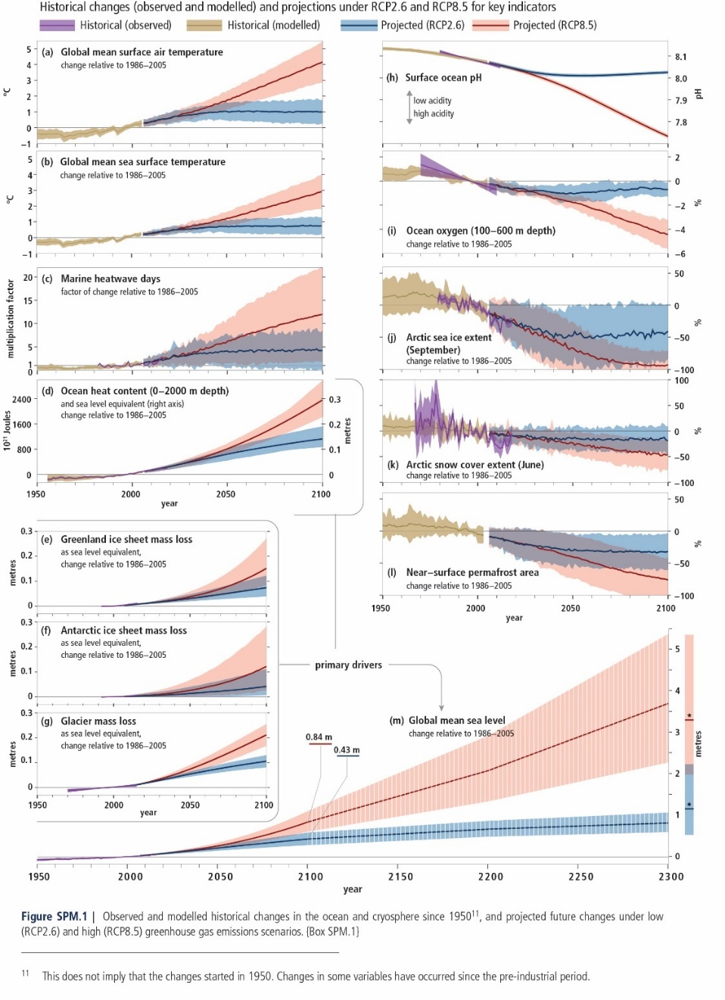
Fig. 89 איור 10.8: שינויים באוקיינוסים ובכיפות הקרח בעקבות התחממות גלובלית בעבר ובעתיד, בין שנת 1950 ועד 2100 בהשוואה לערך הממוצע של 2005-1986. RCP2.6 –increase in temperature by 1.6°C by the end-of-century RCP8.5 - increase in temperature by 4.3°C by the end-of-century איור A: שינויים בטמפרטורה הממוצעת של האוויר בכדור הארץ. איור B: שינויים בטמפרטורה הממוצעת של מי השטח באוקיינוסים. איור C: מספר הימים של גלי חום ימיים. איור D: תכולת החום שספגו האוקיינוסים ושינויים במפלס הים האוקיינוסים (האוקיינוסים ספגו מאז 1970 כ- 90% מעודף החום של כדור הארץ. בגלל קיבול החום הגדול של מים, יעבור זמן רב אחרי שנפסיק לפלוט גזי חממה בטרם האוקיינוסים יתקררו שוב). איור E: אובדן קרח מגרינלנד. איור F: אובדן קרח מאנטארקטיקה. איור G: אובדן קרח מקרחונים הרריים. איור H: ערך החומציות (pH) של מי השטח של האוקיינוסים. איור I: ריכוז חמצן מומס בעומק 100-600 מטר. איור J: כיסוי קרח ימי בים הארקטי בספטמבר. איור K: כיסוי שלג באזור האקלים הארקטי ביוני. איור L: שטח הקרקע הקפואה (permafrost). איור M: מפלס מי הים. חשוב לזכור שחלק מהשינויים התחילו לפני 1950. מקור – IPCC (2019), https://www.ipcc.ch/srocc/chapter/summary-for-policymakers/ ; Reprinted with permission.#
RCP2.6 –increase in temperature by 1.6°C by the end-of-century
RCP8.5 - increase in temperature by 4.3°C by the end-of-century
איור A: שינויים בטמפרטורה הממוצעת של האוויר בכדור הארץ. איור B: שינויים בטמפרטורה הממוצעת של מי השטח באוקיינוסים. איור C: מספר הימים של גלי חום ימיים. איור D: תכולת החום שספגו האוקיינוסים ושינויים במפלס הים האוקיינוסים (האוקיינוסים ספגו מאז 1970 כ- 90% מעודף החום של כדור הארץ. בגלל קיבול החום הגדול של מים, יעבור זמן רב אחרי שנפסיק לפלוט גזי חממה בטרם האוקיינוסים יתקררו שוב). איור E: אובדן קרח מגרינלנד. איור F: אובדן קרח מאנטארקטיקה. איור G: אובדן קרח מקרחונים הרריים. איור H: ערך החומציות (pH) של מי השטח של האוקיינוסים. איור I: ריכוז חמצן מומס בעומק 100-600 מטר. איור J: כיסוי קרח ימי בים הארקטי בספטמבר. איור K: כיסוי שלג באזור האקלים הארקטי ביוני. איור L: שטח הקרקע הקפואה (permafrost). איור M: מפלס מי הים. חשוב לזכור שחלק מהשינויים התחילו לפני 1950. מקור –
IPCC (2019), https://www.ipcc.ch/srocc/chapter/summary-for-policymakers/ ; Reprinted with permission.

{kind=link}
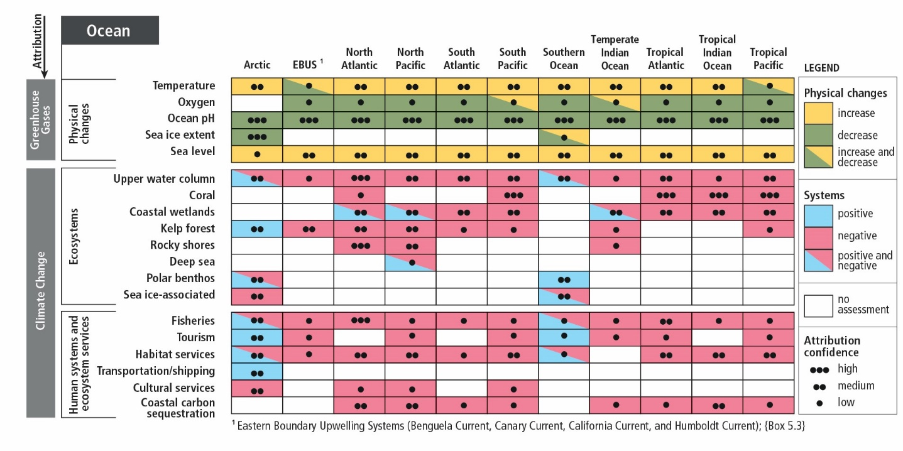
Fig. 90 איור 10.9: השפעת התחממות גלובלית על אזורים שונים באוקיינוסים. מקור – IPCC (2019) https://www.ipcc.ch/srocc/chapter/summary-for-policymakers/; Reprinted with permission. IPCC (2019) https://www.ipcc.ch/srocc/chapter/summary-for-policymakers/; Reprinted with permission.#
עליית מפלס הים#
שינויים במפלס הים נובעים ממגוון סיבות, חלקן מקומיות וחלקן עולמיות. שינויי מפלס הים המעסיקים אותנו כיום הם ביטוי למחזור המים בטבע ובעיקר להצטברות קרח על גבי יבשות וכן לשינויי נפח של מי הים בעקבות חימום או קירור (התפשטות תרמית). לדוגמא, בשיא תקופת הקרח האחרונה, כאשר חלקים נרחבים מצפון אמריקה, אירופה שמצפון לאלפים וצפון אסיה היו מכוסים במעטה קרח שעוביו היה מעל לקילומטר, בנוסף לקרח שנערם בגרינלנד ובאנטארקטיקה, מפלס הים היה נמוך בכ-120 מטר ממפלסו כיום.[242] זאת כיוון שכמויות גדולות מאד של מים הצטברו כקרח על היבשות ולא זרמו חזרה לים. מצב זה התקיים כאשר הטמפרטורה הממוצעת של כדור הארץ הייתה נמוכה ב-8-5 מעלות צלזיוס בהשוואה להווה. דוגמא נוספת: לפני כ-34 מיליון שנה החל להיווצר מעטה הקרח המכסה את אנטארקטיקה, כאשר נוצרו התנאים המתאימים מבחינת הזרמים באוקיינוס ומשטר הרוחות באזור, בעיקר בזכות ההתנתקות של אנטארקטיקה מדרום אמריקה ומאוסטרליה, וכאשר ריכוזי פד“ח באטמוספרה ירדו מתחת ל-600 חלקים למיליון.[243] כלומר, אם ריכוזי פד“ח באטמוספרה ימשיכו לטפס בקצב הנוכחי, לקראת סוף המאה הם יגיעו לערכים של כ-600 חלקים למיליון ותתרחש המסת קרחונים משמעותית. כאשר כל הקרח באנטארקטיקה יימס, יעלה מפלס הים ב-60 עד 80 מטר. אמנם, תופעות דומות כבר התרחשו בעבר ובפרק 6 מופיעות דוגמאות של תקופות חמות נוספות בהן מפלס הים היה גבוה לעומת ההווה. אולם, בעולם שבו אחוז ניכר מהאנושות חי באזורי חופים, אפילו לעלייה של מטר או שניים יש השלכות מרחיקות לכת כתוצאה מפגיעה בתשתיות ובאקוסיסטמות חופיות.[244] לאחרונה עלה החשש שהמסתו של קרחון Thwaites הנמצא באזור החוף של מערב אנטארקטיקה, תגרום לעלייה במפלס הים,[245] כאשר ההערכות הן שאם וכאשר הוא ימס לחלוטין מפלס הים יעלה בכחצי מטר. בנוסף, Thwaites מהווה מחסום טבעי המונע מקרחונים נוספים הנמצאים מאחוריו לגלוש אל ים אמונדסן (Amundsen Sea) ולהימס.
ישנן, כאמור סיבות נוספות לשינויים במפלס הים שהן פחות רלוונטיות לדיון הנוכחי. בין הסיבות המקומיות ניתן למצוא תנועות טקטוניות של חלקים מסוימים בקרום כדור הארץ, תגובה של אזורים ביבשה להמסת קרחונים שכיסו אותם בתקופת הקרח האחרונה, ששיאה היה לפני 23 אלף שנה, ועוד. ישנם גם שינויים עולמיים במפלס הים הנובעים משינויים בכמות הבזלת המגיחה לקרקעית הים כמחדרים (דייקים) ברכסים המרכז אוקיאניים. כאשר פעילות כזאת מתגברת, הבזלת המורבדת על קרקעית האוקיינוסים דוחקת את המים וגורמת לעליית מפלס הים. שינויים כאלה התרחשו בעבר הגיאולוגי של כדור הארץ.
במהלך עשרות השנים האחרונות נעשו מאמצים רבים למדוד את קצב עליית מפלס הים ולאמוד את התרומה היחסית לעליית מפלס זו של המסת הקרח מסוגים שונים: קרחונים הרריים, כיפת הקרח של גרינלנד וכיפת הקרח של מערב אנטארקטיקה.[246] כמו כן נעשים מאמצים למדוד את תרומתה של ההתפשטות התרמית של מי האוקיינוס לעליית המפלס. ההערכות לגבי קצב עליית מפלס הים נעות בין 2 מ“מ לשנה (0.2 מטר למאה שנה) ועד קצת יותר מ-3 מ“מ לשנה.[247] נעשו גם ניסיונות לאמוד שינויים בקצב העלייה עם הזמן.[248] לצד המסת הקרחונים, זוהו תהליכים נוספים שתרמו לשינוי מפלס הים. למשל זיהו שאצירת מים בעזרת סכרים האטה את קצב עליית מפלס הים, וניצול יתר של מי תהום, כולל מי תהום פוסילים, הגבירו את קצב העלייה (ראו ציר אנכי ימני באיור 9.6). בדוח שפורסם ב-2018 נטען כי קצב העלייה הואץ החל משנות התשעים של המאה ה-20,[249] והוא כיום מעל 3 מ“מ לשנה. כמו כן, נקבע שתרומת ההתפשטות התרמית, המסת קרחונים הרריים, המסת כיפת הקרח של גרינלנד והמסת כיפת הקרח של מערב אנטארקטיקה תרמו לעליית מפלס הים 42%, 21%, 15% ו-8%, בהתאמה. כלומר, ניתן להסביר כ-86% מהעלייה, כאשר ההתפשטות התרמית אחראית לכמחצית מכך. המידע העדכני ביותר על עליית מפלס הים ב-120 השנים האחרונות פורסם על ידי NASA, והוא מופיע באיור 10.10 (וגם באיור M10.8 – ראו לעיל).[250] המסר העיקרי מהדוח של NASA הוא שעליית מפלס הים ב-120 השנים האחרונות היא פועל יוצא של פעילות האדם, וקצב העלייה (כ-0.2 מטר במאה שנה) הוא המהיר ביותר ב-2,500 השנים האחרונות. מצד שני, בהסתכלות רחבה יותר, נטען ש-0.2 מטר למאה שנה הוא קצב איטי יחסית לקצב העלייה לפני כ-15 אלף שנה, שעמד על 4-1 מטר למאה שנה. זאת כתוצאה מהפשרת הקרחונים שכיסו את צפון אמריקה, אירופה וצפון אסיה.[251] לאחרונה התפרסמו עבודות שמנסות להעריך את קצב עליית המפלס הצפוי להתרחש במאה העשרים ואחת, ואף מעבר לכך.[252]
כפי שרואים באיור 10.10, מדידות מפלס הים נעשו לאורך כל התקופה בעזרת מצופים שהיו מוצבים במספר אתרים ברחבי כדור הארץ, והחל משנות התשעים של המאה שעברה נוספו אליהם מדידות לווין. בשני סוגי המדידות צריך לבצע תיקונים על מנת לתרגם את המידע הראשוני לערכים נכונים. שיטות התיקון הללו משכו אש מצידם של חוקרים המנסים להמעיט בחשיבות של השפעת האדם על עליית מפלס הים. עד כה, כל הביקורות הללו התפרסמו בעיתונות שלא עברה ביקורת עמיתים.[253] בנוסף למדידות של מצופים ולוויינים ישנן עדויות מקומיות רבות על שינויי מפלס שהתבססו על מדי גאות ושפל, כאשר באותו אתר מפלס הים נמדד בהפרש של שנים רבות. אזי, מתקבלת תמונה יותר פשוטה להבנה, אם כי תמיד עולה השאלה האם מדובר בתיעוד של תהליך מקומי או בתיעוד של שינוי עולמי במפלס הים. כך נעשה עם סימוני מפלס ים שיצר אחד מחוקרי הטבע הנודעים של המאה ה-19, ג’יימס רוס (Ross), באיי פוקלנד.[254] צוות החוקרים השווה את הסימנים של רוס מ-1842 עם מדידות משנות השמונים של המאה העשרים ומצא פער של כ-1 מ“מ לשנה. אולם, בבדיקה נוספת שנעשתה 25 שנה לאחר מכן, התקבל פער גדול יותר, שמצביע על האצה בעליית המפלס מאז 1992 לערכים הקרובים ל-3 מ“מ לשנה.
העלייה במפלס הים עקב ההתחממות הגלובלית מתחילה לתת את אותותיה ומחייבת היערכות במיוחד בערי חוף צפופות,[255] ואולי בעתיד גם תביא להעתקת מיליוני אנשים מבתיהם.[256] שוניות אלמוגים, יערות מנגרובים[257] ודלתאות הם מהמקומות המועדים ביותר לפורענות. האזורים בהם נהרות נשפכים אל הים פגיעים מאד בגלל שילוב של הגברת שיטפונות עקב ההתחממות הגלובלית, עליית מפלס הים, וכן בגלל שקיעת קרקע באזורי דלתא.[258] מקומות נוספים המועדים לפורענות הן ערי חוף הסובלות כבר כיום משקיעת קרקע עקב שאיבת יתר של מי תהום ובינוי לגובה המעמיס על הקרקע.[259] גם ערי נמל באזורים קרים עלולות להיות מוצפות אם קרחונים הנמצאים בקרבתן ימסו בקצב מוגבר או יתנתקו מהיבשה אל הים.[260] מעבר לכך, יש מקומות שכבר היום חשים את עליית מפלס הים, למשל חלק מיישובי החוף המזרחי של ארצות הברית.[261] גם בחלק מהאיים, בעיקר באוקיינוס השקט ובאוקיינוס ההודי, ישנם יישובים הנמצאים בגובה של פחות ממטר מעל מפלס הים, וכל עלייה נוספת של המפלס תסכן אותם. דוגמא לכך היא העיר מלא (Malé) באיים המלדיביים (http://streamer.co.il/articles/view/sinking-islands-global-warming-rising-sea-level). יתרה מזאת, ב-2026 התפרסם מאמר הטוען שעליית מפלס הים בפועל באזורים שונים בעולם, בעיקר בדרום האוקיאנוס השקט ובאוקיינוס ההודי גבוהה יותר מהצפי של מודלים המבוססים על תצפיות לווינים.[262]
{kind=link}
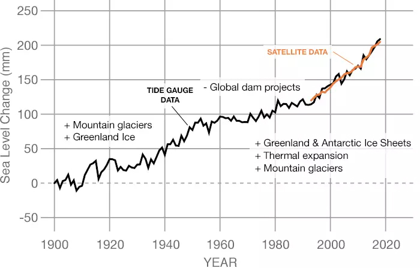
Fig. 91 איור 10.10: עליית מפלס הים, שיטות מדידה והגורמים המרכזיים בכל תקופה מאז 1900. מקור – NASA, https://climate.nasa.gov/vital-signs/sea-level/ ; Reprinted with permission. NASA, https://climate.nasa.gov/vital-signs/sea-level/ ; Reprinted with permission.#
האוקיינוסים כמלכודת לפד“ח#
האוקיינוסים מהווים מלכודת יעילה ביותר לפד“ח. אולם, התחממות מי האוקיינוסים מורידה את יכולתם להמיס פד“ח ולכן גובר החשש שבהשוואה לטרום המהפכה התעשייתית, אחוז גבוה יותר של פד“ח הנפלט מפעילות אנושית יתרכז באטמוספרה ויגביר את קצב ההתחממות הגלובלית. עד לאחרונה כ-40% מהפד“ח הצטבר באטמוספרה, 30% הומס במי האוקיינוסים, ו-30% נקלט במערכות יבשתיות.[263] יש דיווחים שעד כה לא נצפו שינויים משמעותיים באחוז הפד“ח הנקלט באטמוספרה במאות השנה האחרונות, כלומר שהאוקיינוסים והיבשות ממשיכות לקלוט אחוז קבוע של פד“ח. השאלה כמה זמן יימשך המצב הזה מעסיקה חוקרים רבים. מנגנון הסילוק העיקרי של פד“ח על ידי מי ים הוא פיזיקלי-כימי, באמצעות התמוססות פד“ח במי ים. מנגנון משני הוא ביולוגי ושניהם פעלו גם לפני התערבות האדם. המנגנון הפיזיקלי-כימי מוביל להפיכת פד“ח אטמוספירי לפד“ח מומס. כאשר יש עלייה בריכוזי פד“ח באטמוספרה, יש עלייה בריכוז הפחמן האי-אורגני המומס במי הים ועלייה בחומציות מי הים (כפי שהראנו מוקדם יותר בפרק). הקשר בין יעילות המשאבה הפיזיקלית-כימית לטמפרטורת המים מעסיקה מאד את החוקרים משום שמסיסות פד“ח במי ים תלויה בטמפרטורה, ובעקבות ההתחממות הגלובלית טמפרטורת מי הים עולה ותמשיך לעלות ופד“ח פחות מסיס במים חמים. למרות זאת, דווח שבין השנים 1994 ו-2007 לא חל שינוי משמעותי ביעילות המשאבה, והיא סילקה כ-30% מהפד“ח שנפלט לאטמוספרה. אמנם הממוצע של יעילות המשאבה נותרה כפי שהיא, אולם נצפו הבדלים משמעותיים בין אזורים שונים, כנראה בגלל שינויים בזרמי האוקיינוס בתגובה לשינויי אקלים.[264]
קצב סילוק נמוך הרבה יותר נובע מפעילות ביולוגית. רוב היצרנות הראשונית באוקיינוס נעשית בשכבת המים העליונה (מי השטח) שאליהם חודר מספיק אור. היצרנים הראשוניים צורכים פד“ח מומס ומים בתהליך הפוטוסינתזה היוצר חומר אורגני וחמצן שמשתחרר אל האטמוספרה. לאחר מותם, שוקע החומר האורגני האצור בגופם אל הקרקעית ועל ידי כך מסולק פד“ח מהאטמוספרה. המנגנון הזה נקרא ”המשאבה הביולוגית“, ocean’s biological carbon pump - BCP.[265] יעילות הסילוק אינה גבוהה משום שחלק ניכר מהחומר האורגני מתחמצן בגוף המים הימי או בקרקעית הים, והופך בחזרה לפד“ח המשתחרר לאטמוספרה. יש עדין פערים רבים בידע שלנו לגבי ה-BCP ובתרומתה למחזור בפחמן העולמי,[266] אולם ככול הנראה, היעילות של משאבת הפחמן הביולוגית גדלה ב-15 מיליון השנה האחרונות, כנראה משום שכדור הארץ והאוקיינוסים התקררו, מה שהביא לירידה בקצב החמצון של החומר האורגני.[267] ההתחממות הצפויה של מי האוקיינוסים טומנת לכן בחובה סכנה לעלייה בקצב החמצון של חומר אורגני ימי ולהקטנת היעילות של המשאבה הביולוגית.
הגברת סילוק פד“ח ואגירתו הוא נושא הנמצא בחזית המחקר הסביבתי כיום, ונידון בקצרה בפרק 3.[268] לאוקיינוסים יש תפקיד מרכזי במאמץ הזה.[269] בשנים האחרונות פורסמו מספר דוחות על ידי גופים שונים, כמו קבוצת חוקרים של הגנת הסביבה הימית (GESAMP)[270] והאקדמיה האמריקאית למדעים (NAS). דוח של NAS משנת 2022 מסכם את הדרכים השונות שבהן האוקיינוסים יכולים לתרום לסילוק וקיבוע פד“ח.[271] המחברים מונים שישה כיווני פעולה עיקריים: (1) דישון האוקיינוסים עם נוטריינטים, בראש ובראשונה ברזל, ובנוסף חנקן וזרחן (Fe, N, or P fertilization); (2) upwelling ו-downwelling מלאכותיים;[272] (3) חקלאות אצות-ים (Seaweed cultivation); (4) שיקום מערכות אקולוגיות ימיות וחופיות (Recovery of ocean and coastal ecosystems, including large marine organisms); (5) אלקליניזציה[273] של האוקיינוסים (Ocean alkalinity enhancement);[274] (6) שיקוע מינרלים קרבונטיים באמצעות אלקטרוליזה (electrochemical approaches)[275] (איור 10.11). ישנן גם הצעות לשלב בין שתי גישות, למשל אלקליניזציה והגברת היצרנות הראשונית.[276] ארבעת כיווני הפעולה הראשונים מתמקדים בדרכים להגביר את יעילות המנגנון הביולוגי של קליטת פד“ח על ידי האוקיינוסים, ואילו שני כיווני הפעולה האחרונים נועדו להגביר סילוק פד“ח באמצעות המנגנון הפיזיקלי-כימי.
כל כיווני הפעולה מלבד דישון האוקיינוסים עם נוטריינטים שעליו נרחיב בהמשך, נמצאים בשלבים ראשוניים, הכוללים מודלים ולעיתים ניסויים בקנה מידה קטן. כך גם לגבי הרעיון לאגור פד“ח על קרקעית הים העמוק ובסדימנט בצורה של גז-הידרט (Hydrates).[277] תחום זה אינו מופיע בדוח של האקדמיה האמריקאית למדעים, אולם הוא פורסם במספר גדול של מאמרים שסוכמו לאחרונה בצורה מקיפה ויסודית.[278] הרעיון מבוסס על העובדה שבעומק מעל 2,800 מטר ובטמפרטורה מתחת ל-9° צלזיוס, הפד“ח כגז-הידרט צפוף יותר ממי ים, ולכן יישאר במעמקים. אמנם במצב כזה תהיה לפד“ח השפעה מקומית על הסביבה הימית, כולל הגברת החומציות, אך ההשפעה על חומציות כלל האוקיינוסים, גם אם נלכוד את כל הפד“ח שהאנושות פלטה מאז המהפכה התעשייתית, תהיה זניחה. כאמור, הנושא נמצא עדין בשלב התחלתי, אבל נראה שלגישה זאת, כמו גם לרעיון האלקליניזציה של האוקיינוסים יש פוטנציאל גדול ביותר, וסביר שבשני כיוונים אלה יהיו פריצות דרך משמעותיות בשנים הקרובות. ישנם גם רעיונות בוסריים יותר, כמו למשל לפזר מינרלים סיליקטים עשירי סידן על חופי הים כדי שיגיבו עם פד“ח אטמוספרי וישקיעו קלציום-קרבונט וכך יסייעו בסילוק פד“ח מהאטמוספרה.[279]
אנחנו נתמקד בדישון האוקיאנוס בברזל (דישון האוקיינוסים עם נוטריינטים) משום שמכל הכיוונים המוצעים, הוא היחיד שהגיע לשלב של ניסויים רחבי היקף. ברזל ונוטריינטים אחרים שריכוזם במי ים נמוך, מגיעים אל האוקיינוס הפתוח בעיקר באמצעות אבק יבשתי הנישא ברוח ובמידה פחותה ממקורות הידרו-תרמליים,[280] תופעה שמתרחשת בהווה והתרחשה גם בעבר.[281] לאחרונה נטען שלאוקיאנוס הדרומי שבו נתמקד בהמשך, הגיעו בעבר ועשויות להגיע בעתיד כמויות ברזל גדולות שמקורן בבליה של סלעי מערב אנטארקטיקה.[282] בנוסף, בגלל תכונותיו הכימיות, הברזל הנמצא במי הים אינו מסיס ונוטה ליצר חלקיקים,[283] מה שמקטין את זמינותו הביולוגית. גם ברזל המגיע עם אבק אטמוספרי נמצא ברובו בתוך חלקיקי האבק וחלק ניכר ממנו אינו זמין ליצרנים הראשוניים, אפילו לאחר שהאבק שקע בים. לכן נעשו מאמצים רבים לאפיין את הברזל בסוגי אבק שונים ואת מידת מסיסותו.[284] במילים אחרות, ריכוז הברזל הזמין לביוטה במי הים נקבע על פי סוג האבק שמסיע אותו, קצב שקיעת חלקיקי האבק, קצב התמוססותו של האבק ושחרור ברזל אל מי הים, וקצב הלכידה של ברזל על ידי הביוטה מול קצב שקיעתו כחלקיקים לא מסיסים.[285]
הרעיון להוסיף ברזל זמין למי הים הוצע לראשונה בסדרת מאמרים שפרסמו ג’והן מרטין (Martin) ושותפיו בשנים 1988 -1990.[286] הם הציגו מספר ניסויים בקנה מידה קטן אשר הראו שברזל הוא אכן הנוטריינט המגביל גידול אצות מקבעות פד“ח במי האוקיינוס הדרומי. הסיבה לכך היא שבאוקיינוס הדרומי ישנם אזורים שבהם היצרנות הראשונית היא נמוכה למרות שריכוז החנקן בהם גבוה. באזורים ימיים אחרים בהם ריכוזו נמוך הרבה יותר, חנקן הוא הנוטריינט המגביל.[287] יתרון נוסף של הברזל הוא שהוא מיקרו-נוטריינט ולכן לא צריך הרבה ממנו על מנת לסייע ליצרנות ראשונית, בעוד שחנקן, למשל, הוא מקרו-נוטריינט וצריך כמויות גדולות שלו כדי לסייע ליצרנות ראשונית. בעקבות מאמרים אלה נערכו כ-12 ניסיונות זריעת ברזל בקנה מידה גדול יותר. לאחר מספר ניסיונות סרק, הצליחו החוקרים לקבל תוצאות חיוביות, וצילומי לווין תיעדו הגברת היצרנות הראשונית בשובל הספינות שפיזרו ברזל במי האוקיינוס.[288] יתרה מזאת, החוקרים הצליחו להראות שבעקבות פיזור ברזל סולקו לקרקעית הים כמויות גדולות בהרבה של פחמן, ששקע בצורה של מיקרו-אורגניזמים ימיים (בעיקר פלנקטון) בסוף מחזור החיים שלהם.[289] מאוחר יותר התגלה שגם באוקיינוס השקט באזור קוו המשווה יש לעיתים מחסור בברזל מה שהופך גם אותו למתאים לזריעה בתזמון המתאים.[290] במחקרים נוספים שנערכו במקומות אחרים באוקיינוס נתגלו מספר בעיות. קודם כל, במקומות שבהם חנקן אינו נמצא בעודף כמו באוקיינוס הדרומי, זריעת ברזל והגברת היצרנות הראשונית מכלה את מאגר החנקן במי הים.[291] כמו כן, התפרסמו מאמרים שתיעדו התפתחות של אצות מפרישות-רעלנים בעקבות זריעת ברזל.[292] שלושים וחמש שנה אחרי הניסויים הראשונים של מרטין ועמיתיו, דווח כי המחסור בברזל אצל יצרנים ראשוניים באוקיינוס הדרומי גדל, ובעקבותיו נפגע שם קיבוע הפחמן,[293] מה שמדגיש את הנחיצות של זריעת ברזל. לאור כל הנאמר, נטען לאחרונה שיש לשכלל את המדדים לבדיקת היעילות של קיבוע פחמן לטווח ארוך באמצעות זריעת ברזל.[294] בנוסף למחקרים שהתמקדו בברזל התפרסמו מאמרים שהתמקדו בנוטריינטים אחרים, למשל זרחן (ראו גם את פרק 5) שגם הוא מגיע לאוקיינוס הפתוח בעיקר באמצעות אבק אטמוספרי.[295] התפרסמו גם מאמרים שכרכו ברזל עם זרחן ואת השפעתם המשותפת על זמינות חנקן.[296]
{kind=link}
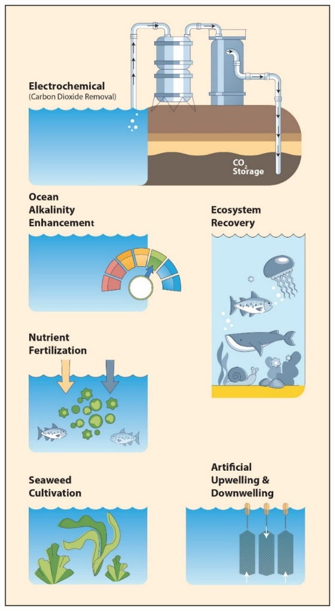
Fig. 92 איור 10.11: תיאור כיווני הפעולה העיקריים לקיבוע פד“ח בסביבה הימית. על פי – National Academies of Sciences, Engineering, and Medicine (2022) https://doi.org/10.17226/26278#
סיכום#
פרק זה התמקד במספר תהליכים המתרחשים באוקיינוסים שיש להם השפעות מרחיקות לכת על הסביבה הימית עצמה ולעיתים גם השלכות בקנה מידה גלובלי.
המזהמים העיקריים של מי הים הם נפט, פלסטיק, נוטריינטים, כימיקלים ומתכות.
בסביבות חופיות רבות ישנם תהליכי אאוטרופיקציה ונוצרים ”אזורים מתים“ (dead zones), בנוסף ישנם אזורים דלי חמצן בלב ים.
לדיג יתר יש השפעות מרחיקות לכת על המערכת האקולוגית הימית ועל מגוון המינים הימיים והיא גורמת לעיתים לפלישת מינים.
עליית ריכוז הפחמן הדו-חמצני באטמוספרה מובילה להחמצת האוקיינוסים, תהליך הפוגע ביכולתם של יצורים ימיים לבנות שלדים קרבונטיים (פחמת הסידן).
ישנה פגיעה חמורה בסביבות חופיות רבות. ראוי לציין תופעות כגון הלבנת אלמוגים, הרס יערות מנגרובים, שפכי נהרות, יצירת אזורים מתים (dead zones).
לזרמי האוקיינוס יש השפעה מרכזית על תהליכי פיזור החום בכדור הארץ ועל קצב שינויי אקלים. זרמי האוקיינוס משתנים עקב התחממות גלובלית, שינוי העלול להחריף את קצב ההתחממות. זרמי האוקיינוס אחראים על פיזור מזהמים המגיעים מהיבשה לאזורים הנידחים ביותר (למשל פלסטיק), כולל מעמקי האוקיינוס.
בעקבות ההתחממות הגלובלית בעשורים האחרונים מתועדת עליית מפלס מי הים שלה יש השלכות מרחיקות לכת על חלק ניכר מהאנושות.
לאוקיינוסים יש תפקיד מרכזי בקיבוע פד“ח אטמוספרי, והם יכולים להשתלב במאמצים להגביר את קצב קיבוע גזי חממה (בעיקר פד“ח) וסילוקם מן האטמוספרה, למשל באמצעות עידוד יצרנות ראשונית ימית והגברת האלקליניות.